Chapter 3: Probability Topics¶
Introduction¶
Chapter Outline: Chapter Objectives
By the end of this chapter, the student should be able to:
- Understand and use the terminology of probability.
- Determine whether two events are mutually exclusive and whether two events are independent.
- Calculate probabilities using the Addition Rules and Multiplication Rules.
- Construct and interpret Contingency Tables.
- Construct and interpret Venn Diagrams.
- Construct and interpret Tree Diagrams.
It is often necessary to "guess" about the outcome of an event in order to make a decision. Politicians study polls to guess their likelihood of winning an election. Teachers choose a particular course of study based on what they think students can comprehend. Doctors choose the treatments needed for various diseases based on their assessment of likely results. You may have visited a casino where people play games chosen because of the belief that the likelihood of winning is good. You may have chosen your course of study based on the probable availability of jobs.
You have, more than likely, used probability. In fact, you probably have an intuitive sense of probability. Probability deals with the chance of an event occurring. Whenever you weigh the odds of whether or not to do your homework or to study for an exam, you are using probability. In this chapter, you will learn how to solve probability problems using a systematic approach.
Collaborative Exercise
Your instructor will survey your class. Count the number of students in the class today.
- Raise your hand if you have any change in your pocket or purse. Record the number of raised hands.
- Raise your hand if you rode a bus within the past month. Record the number of raised hands.
- Raise your hand if you answered "yes" to BOTH of the first two questions. Record the number of raised hands.
Use the class data as estimates of the following probabilities. P(change) means the probability that a randomly chosen person in your class has change in his/her pocket or purse. P(bus) means the probability that a randomly chosen person in your class rode a bus within the last month and so on. Discuss your answers.
- Find P(change).
- Find P(bus).
- Find P(change AND bus). Find the probability that a randomly chosen student in your class has change in their pocket or purse and rode a bus within the last month.
- Find P(change|bus). Find the probability that a randomly chosen student has change given that they rode a bus within the last month. Count all the students that rode a bus. From the group of students who rode a bus, count those who have change. The probability is equal to those who have change and rode a bus divided by those who rode a bus.
3.1 Terminology¶
Probability is a measure that is associated with how certain we are of outcomes of a particular experiment or activity. An experiment is a planned operation carried out under controlled conditions. If the result is not predetermined, then the experiment is said to be a chance experiment. Flipping one fair coin twice is an example of an experiment.
A result of an experiment is called an outcome. The sample space of an experiment is the set of all possible outcomes. Three ways to represent a sample space are: to list the possible outcomes, to create a tree diagram, or to create a Venn diagram. The uppercase letter S is used to denote the sample space. For example, if you flip one fair coin, S = {H, T} where H = heads and T = tails are the outcomes.
An event is any combination of outcomes. Upper case letters like A and B represent events. For example, if the experiment is to flip one fair coin, event A might be getting at most one head. The probability of an event A is written P(A).
The probability of any outcome is the long-term relative frequency of that outcome. Probabilities are between zero and one, inclusive (that is, zero and one and all numbers between these values). P(A) = 0 means the event A can never happen. P(A) = 1 means the event A always happens. P(A) = 0.5 means the event A is equally likely to occur or not to occur. For example, if you flip one fair coin repeatedly (from 20 to 2,000 to 20,000 times) the relative frequency of heads approaches 0.5 (the probability of heads).
Equally likely means that each outcome of an experiment occurs with equal probability. For example, if you toss a fair, six-sided die, each face (1, 2, 3, 4, 5, or 6) is as likely to occur as any other face. If you toss a fair coin, a Head (H) and a Tail (T) are equally likely to occur. If you randomly guess the answer to a true/false question on an exam, you are equally likely to select a correct answer or an incorrect answer.
To calculate the probability of an event A when all outcomes in the sample space are equally likely, count the number of outcomes for event A and divide by the total number of outcomes in the sample space. For example, if you toss a fair dime and a fair nickel, the sample space is {HH, TH, HT, TT} where T = tails and H = heads. The sample space has four outcomes. A = getting one head. There are two outcomes that meet this condition {HT, TH}, so P(A) = \(\frac{2}{4}\) = 0.5.
Suppose you roll one fair six-sided die, with the numbers {1, 2, 3, 4, 5, 6} on its faces. Let event E = rolling a number that is at least five. There are two outcomes {5, 6}. P(E) = \(\frac{2}{6}\). If you were to roll the die only a few times, you would not be surprised if your observed results did not match the probability. If you were to roll the die a very large number of times, you would expect that, overall, \(\frac{2}{6}\) of the rolls would result in an outcome of "at least five". You would not expect exactly \(\frac{2}{6}\). The long-term relative frequency of obtaining this result would approach the theoretical probability of \(\frac{2}{6}\) as the number of repetitions grows larger and larger.
This important characteristic of probability experiments is known as the law of large numbers which states that as the number of repetitions of an experiment is increased, the relative frequency obtained in the experiment tends to become closer and closer to the theoretical probability. Even though the outcomes do not happen according to any set pattern or order, overall, the long-term observed relative frequency will approach the theoretical probability. (The word empirical is often used instead of the word observed.)
It is important to realize that in many situations, the outcomes are not equally likely. A coin or die may be unfair, or biased. Two math professors in Europe had their statistics students test the Belgian one Euro coin and discovered that in 250 trials, a head was obtained 56% of the time and a tail was obtained 44% of the time. The data seem to show that the coin is not a fair coin; more repetitions would be helpful to draw a more accurate conclusion about such bias. Some dice may be biased. Look at the dice in a game you have at home; the spots on each face are usually small holes carved out and then painted to make the spots visible. Your dice may or may not be biased; it is possible that the outcomes may be affected by the slight weight differences due to the different numbers of holes in the faces. Gambling casinos make a lot of money depending on outcomes from rolling dice, so casino dice are made differently to eliminate bias. Casino dice have flat faces; the holes are completely filled with paint having the same density as the material that the dice are made out of so that each face is equally likely to occur. Later we will learn techniques to use to work with probabilities for events that are not equally likely.
*"OR" Event*:
An outcome is in the event A OR B if the outcome is in A or is in B or is in both A and B.
The event A OR B can also be written as A Union B, with notation as follows:
\(A\cup B\)
For example, let A = {1, 2, 3, 4, 5} and B = {4, 5, 6, 7, 8}.
Then \(A\cup B\) = {1, 2, 3, 4, 5, 6, 7, 8}. Notice that 4 and 5 are NOT listed twice.
*"AND" Event*:
An outcome is in the event A AND B if the outcome is in both A and B at the same time.
The event A AND B can also be written as A Intersection B, with notation as follows:
\(A\cap B\)
For example, let A and B be {1, 2, 3, 4, 5} and {4, 5, 6, 7, 8}, respectively.
Then \(A\cap B\)= {4, 5}.
The complement of event A is denoted A′ (read "A prime"). A′ consists of all outcomes that are NOT in A. Notice that P(A) + P(A′) = 1. For example, let S = {1, 2, 3, 4, 5, 6} and let A = {1, 2, 3, 4}. Then, A′ = {5, 6}. P(A) = \(\frac{4}{6}\), P(A′) = \(\frac{2}{6}\), and P(A) + P(A′) = \(\frac{4}{6}+\frac{2}{6}\) = 1
The conditional probability of A given B is written P(A|B). P(A|B) is the probability that event A will occur given that the event B has already occurred. A conditional reduces the sample space. We calculate the probability of A from the reduced sample space B. The formula to calculate P(A|B) is P(A|B) = \(\frac{P(A\ \text{AND}\ B)}{P(B)}\) where P(B) is greater than zero.
For example, suppose we toss one fair, six-sided die. The sample space S = {1, 2, 3, 4, 5, 6}. Let A = face is 2 or 3 and B = face is even (2, 4, 6). To calculate P(A|B), we count the number of outcomes 2 or 3 in the sample space B = {2, 4, 6}. Then we divide that by the number of outcomes B (rather than S).
We get the same result by using the formula. Remember that S has six outcomes.
P(A|B) = \(\frac{P(A\;\text{AND}\;B)}{P(B)}=\frac{\frac{(\text{the number of outcomes that are 2 or 3 and even in}\ \;S)}{6}}{\frac{(\text{the number of outcomes that are even in}\ \;S)}{6}}=\frac{\frac{1}{6}}{\frac{3}{6}}=\frac{1}{3}\)
Understanding Terminology and Symbols
It is important to read each problem carefully to think about and understand what the events are. Understanding the wording is the first very important step in solving probability problems. Reread the problem several times if necessary. Clearly identify the event of interest. Determine whether there is a condition stated in the wording that would indicate that the probability is conditional; carefully identify the condition, if any.
Example 3.1
The sample space S is the whole numbers starting at one and less than 20.
a. S = _____________________________
Let event A = the even numbers and event B = numbers greater than 13.
b. A = _____________________, B = _____________________
c. P(A) = _____________, P(B) = ________________
d. A AND B = ____________________, A OR B = ________________
e. P(A AND B) = _________, P(A OR B) = _____________
f. A′ = _____________, P(A′) = _____________
g. P(A) + P(A′) = ____________
h. P(A|B) = ___________, P(B|A) = _____________; are the probabilities equal?
Solution
- S = {1, 2, 3, 4, 5, 6, 7, 8, 9, 10, 11, 12, 13, 14, 15, 16, 17, 18, 19}
- A = {2, 4, 6, 8, 10, 12, 14, 16, 18}, B = {14, 15, 16, 17, 18, 19}
- P(A) = \(\frac{9}{19}\), P(B) = \(\frac{6}{19}\)
- A AND B = {14,16,18}, A OR B = {2, 4, 6, 8, 10, 12, 14, 15, 16, 17, 18, 19}
- P(A AND B) = \(\frac{3}{19}\), P(A OR B) = \(\frac{12}{19}\)
- A′ = 1, 3, 5, 7, 9, 11, 13, 15, 17, 19; P(A′) = \(\frac{10}{19}\)
- P(A) + P(A′) = 1 (\(\frac{9}{19}\) + \(\frac{10}{19}\) = 1)
- P(A|B) = \(\frac{P(A\ \text{AND}\ B)}{P(B)}\) = \(\frac{3}{6}\), P(B|A) = \(\frac{P(A\ \text{AND}\ B)}{P(A)}\) = \(\frac{3}{9}\), No
Try It
The sample space S is all the ordered pairs of two whole numbers, the first from one to three and the second from one to four (Example: (1, 4)).
- S = _____________________________
Let event A = the sum is even and event B = the first number is prime. - A = _____________________, B = _____________________
- P(A) = _____________, P(B) = ________________
- A AND B = ____________________, A OR B = ________________
- P(A AND B) = _________, P(A OR B) = _____________
- B′ = _____________, P(B′) = _____________
- P(A) + P(A′) = ____________
- P(A|B) = ___________, P(B|A) = _____________; are the probabilities equal?
Example 3.2
A fair, six-sided die is rolled. Describe the sample space S, identify each of the following events with a subset of S and compute its probability (an outcome is the number of dots that show up).
- Event T = the outcome is two.
- Event A = the outcome is an even number.
- Event B = the outcome is less than four.
- The complement of A.
- A GIVEN B
- B GIVEN A
- A AND B
- A OR B
- A OR B′
- Event N = the outcome is a prime number.
- Event I = the outcome is seven.
Solution
- T = {2}, P(T) = \(\frac{1}{6}\)
- A = {2, 4, 6}, P(A) = \(\frac{1}{2}\)
- B = {1, 2, 3}, P(B) = \(\frac{1}{2}\)
- A′ = {1, 3, 5}, P(A′) = \(\frac{1}{2}\)
- A|B = {2}, P(A|B) = \(\frac{1}{3}\)
- B|A = {2}, P(B|A) = \(\frac{1}{3}\)
- A AND B = {2}, P(A AND B) = \(\frac{1}{6}\)
- A OR B = {1, 2, 3, 4, 6}, P(A OR B) = \(\frac{5}{6}\)
- A OR B′ = {2, 4, 5, 6}, P(A OR B′) = \(\frac{2}{3}\)
- N = {2, 3, 5}, P(N) = \(\frac{1}{2}\)
- A six-sided die does not have seven dots. P(7) = 0.
Try It
A number is randomly selected between 1 to 10. Describe the sample space S, identify each of the following events with a subset of S, and compute its probability (an outcome is the number selected).
- Event F = the outcome is 5.
- Event A = the number is more than 6.
- Event B = the number is odd.
- The complement of B.
- A GIVEN B.
- B GIVEN A.
- A OR B.
- A’ OR B.
- Event P = the outcome is a composite number.
- Event M = the number is a multiple of 3.
Answer
- \(F=5,P(F)=\frac{1}{10}\)
- \(A=\left\{ 7,8,9 \right\},P(A)=\frac{3}{10}\)
- \(B=\left\{ 1,3,5,7,9 \right\},P(B)=\frac{5}{10}\)
- \(B'=\left\{ 2,4,6,8,10 \right\},P(B')=\frac{5}{10}\)
- \(A|B=\left\{ 7,9 \right\},P\left\{ A|B \right\}=\frac{2}{5}\)
- \(B|A=\left\{ 7,9 \right\},P(B|A)=\frac{1}{2}\)
- \(AORB=\left\{ 1,3,5,7,8,9,10 \right\},P(AORB)=\frac{7}{10}\)
- \(A'ORB=\left\{ 1,2,3,4,5,6,7,9 \right\},P(A'ORB)=\frac{4}{5}\)
- \(P=\left\{ 4,6,8,9,10 \right\},P(P)=\frac{1}{2}\)
- \(M=\left\{ 3,6,9 \right\},P(M)=\frac{3}{10}\)
Example 3.3
Table 3.1 describes the distribution of a random sample S of 100 individuals, organized by sex assigned at birth and whether they are right- or left-handed.
Table 3.1
| Right-handed | Left-handed | |
|---|---|---|
| Males | 43 | 9 |
| Females | 44 | 4 |
Let’s denote the events M = the subject is male, F = the subject is female, R = the subject is right-handed, L = the subject is left-handed. Compute the following probabilities:
- P(M)
- P(F)
- P(R)
- P(L)
- P(M AND R)
- P(F AND L)
- P(M OR F)
- P(M OR R)
- P(F OR L)
- P(M')
- P(R|M)
- P(F|L)
- P(L|F)
Solution
- P(M) = 0.52
- P(F) = 0.48
- P(R) = 0.87
- P(L) = 0.13
- P(M AND R) = 0.43
- P(F AND L) = 0.04
- P(M OR F) = 1
- P(M OR R) = 0.96
- P(F OR L) = 0.57
- P(M') = 0.48
- P(R|M) = 0.8269 (rounded to four decimal places)
- P(F|L) = 0.3077 (rounded to four decimal places)
- P(L|F) = 0.0833
Try It
The table describes the distribution of a random sample S of 100 individuals, organized by gender and whether they like tea or coffee.
Table 3.2
| Tea | Coffee | |
|---|---|---|
| Men | 22 | 26 |
| Women | 16 | 36 |
Let's denote the events M = the subject is a man, W = the subject is a woman, T = the subject likes tea, and C = the subject likes coffee. Compute the following probabilities:
- P(M)
- P(W)
- P(T)
- P(C)
- P(M AND T)
- P(W and C)
- P(M OR W)
- P(M OR T)
- P(W OR C)
- P(M')
- P(T|M)
- P(W|C)
- P(C|W)
Answer
- \(P(M)=0.48\)
- \(P(W)=0.52\)
- \(P(T)=0.38\)
- \(P(C)=0.62\)
- \(P(MANDT)=0.22\)
- \(P(WandC)=0.36\)
- \(P(MORW)=1\)
- \(P(MORT)=0.64\)
- \(P(WORC)=0.78\)
- \(P(M')=0.52\)
- \(P(T|M)=0.4583\) (rounded to four decimal places)
- \(P(W|C)=0.5806\) (rounded to four decimal places)
- \(P(C|W)=0.6923\) (rounded to four decimal places)
3.2 Independent and Mutually Exclusive Events¶
Independent and mutually exclusive do not mean the same thing.
Independent Events¶
Two events are independent if the following are true:
- P(A|B) = P(A)
- P(B|A) = P(B)
- P(A AND B) = P(A)P(B)
Two events A and B are independent events if the knowledge that one occurred does not affect the chance the other occurs. For example, the outcomes of two roles of a fair die are independent events. The outcome of the first roll does not change the probability for the outcome of the second roll. To show two events are independent, you must show only one of the above conditions. If two events are NOT independent, then we say that they are dependent events.
Sampling may be done with replacement or without replacement.
- With replacement: If each member of a population is replaced after it is picked, then that member has the possibility of being chosen more than once. When sampling is done with replacement, then events are considered to be independent, meaning the result of the first pick will not change the probabilities for the second pick.
- Without replacement: When sampling is done without replacement, each member of a population may be chosen only once. In this case, the probabilities for the second pick are affected by the result of the first pick. The events are considered to be dependent or not independent.
If it is not known whether A and B are independent or dependent, assume they are dependent until you can show otherwise.
Example 3.4
You have a fair, well-shuffled deck of 52 cards. It consists of four suits. The suits are clubs, diamonds, hearts and spades. There are 13 cards in each suit consisting of 1, 2, 3, 4, 5, 6, 7, 8, 9, 10, J (jack), Q (queen), K (king) of that suit.
a. Sampling with replacement:
Suppose you pick three cards with replacement. The first card you pick out of the 52 cards is the Q of spades. You put this card back, reshuffle the cards and pick a second card from the 52-card deck. It is the ten of clubs. You put this card back, reshuffle the cards and pick a third card from the 52-card deck. This time, the card is the Q of spades again. Your picks are {Q of spades, ten of clubs, Q of spades}. You have picked the Q of spades twice. You pick each card from the 52-card deck.
b. Sampling without replacement:
Suppose you pick three cards without replacement. The first card you pick out of the 52 cards is the K of hearts. You put this card aside and pick the second card from the 51 cards remaining in the deck. It is the three of diamonds. You put this card aside and pick the third card from the remaining 50 cards in the deck. The third card is the J of spades. Your picks are {K of hearts, three of diamonds, J of spades}. Because you have picked the cards without replacement, you cannot pick the same card twice.
Try It
You have a fair, well-shuffled deck of 52 cards. It consists of four suits. The suits are clubs, diamonds, hearts and spades. There are 13 cards in each suit consisting of 1, 2, 3, 4, 5, 6, 7, 8, 9, 10, J (jack), Q (queen), K (king) of that suit. Three cards are picked at random.
- Suppose you know that the picked cards are Q of spades, K of hearts and Q of spades. Can you decide if the sampling was with or without replacement?
- Suppose you know that the picked cards are Q of spades, K of hearts, and J of spades. Can you decide if the sampling was with or without replacement?
Example 3.5
You have a fair, well-shuffled deck of 52 cards. It consists of four suits. The suits are clubs, diamonds, hearts, and spades. There are 13 cards in each suit consisting of 1, 2, 3, 4, 5, 6, 7, 8, 9, 10, J (jack), Q (queen), and K (king) of that suit. S = spades, H = Hearts, D = Diamonds, C = Clubs.
- Suppose you pick four cards, but do not put any cards back into the deck. Your cards are QS, 1D, 1C, QD.
- Suppose you pick four cards and put each card back before you pick the next card. Your cards are KH, 7D, 6D, KH.
Which of a. or b. did you sample with replacement and which did you sample without replacement?
Solution
a. Without replacement; b. With replacement
Try It
You have a fair, well-shuffled deck of 52 cards. It consists of four suits. The suits are clubs, diamonds, hearts, and spades. There are 13 cards in each suit consisting of 1, 2, 3, 4, 5, 6, 7, 8, 9, 10, J (jack), Q (queen), and K (king) of that suit. S = spades, H = Hearts, D = Diamonds, C = Clubs. Suppose that you sample four cards without replacement. Which of the following outcomes are possible? Answer the same question for sampling with replacement.
- QS, 1D, 1C, QD
- KH, 7D, 6D, KH
- QS, 7D, 6D, KS
Mutually Exclusive Events¶
A and B are mutually exclusive events if they cannot occur at the same time. This means that A and B do not share any outcomes and P(A AND B) = 0.
For example, suppose the sample space S = {1, 2, 3, 4, 5, 6, 7, 8, 9, 10}. Let A = {1, 2, 3, 4, 5}, B = {4, 5, 6, 7, 8}, and C = {7, 9}. A AND B = {4, 5}. P(A AND B) = \(\frac{2}{10}\) and is not equal to zero. Therefore, A and B are not mutually exclusive. A and C do not have any numbers in common so P(A AND C) = 0. Therefore, A and C are mutually exclusive.
If it is not known whether A and B are mutually exclusive, assume they are not until you can show otherwise. The following examples illustrate these definitions and terms.
Example 3.6
Flip two fair coins. (This is an experiment.)
The sample space is {HH, HT, TH, TT} where T = tails and H = heads. The outcomes are HH, HT, TH, and TT. The outcomes HT and TH are different. The HT means that the first coin showed heads and the second coin showed tails. The TH means that the first coin showed tails and the second coin showed heads.
- Let A = the event of getting at most one tail. (At most one tail means zero or one tail.) Then A can be written as {HH, HT, TH}. The outcome HH shows zero tails. HT and TH each show one tail.
- Let B = the event of getting all tails. B can be written as {TT}. B is the complement of A, so B = A′. Also, P(A) + P(B) = P(A) + P(A′) = 1.
- The probabilities for A and for B are P(A) = \(\frac{3}{4}\) and P(B) = \(\frac{1}{4}\).
- Let C = the event of getting all heads. C = {HH}. Since B = {TT}, P(B AND C) = 0. B and C are mutually exclusive. (B and C have no members in common because you cannot have all tails and all heads at the same time.)
- Let D = event of getting more than one tail. D = {TT}. P(D) = \(\frac{1}{4}\)
- Let E = event of getting a head on the first roll. (This implies you can get either a head or tail on the second roll.) E = {HT, HH}. P(E) = \(\frac{2}{4}\)
- Find the probability of getting at least one (one or two) tail in two flips. Let F = event of getting at least one tail in two flips. F = {HT, TH, TT}. P(F) = \(\frac{3}{4}\)
Try It
Draw two cards from a standard 52-card deck with replacement. Find the probability of getting at least one black card.
Example 3.7
Flip two fair coins. Find the probabilities of the events.
- Let F = the event of getting at most one tail (zero or one tail).
- Let G = the event of getting two faces that are the same.
- Let H = the event of getting a head on the first flip followed by a head or tail on the second flip.
- Are F and G mutually exclusive?
- Let J = the event of getting all tails. Are J and H mutually exclusive?
Solution
Look at the sample space in Example 3.6.
- Zero (0) or one (1) tails occur when the outcomes HH, TH, HT show up. P(F) = \(\frac{3}{4}\)
- Two faces are the same if HH or TT show up. P(G) = \(\frac{2}{4}\)
- A head on the first flip followed by a head or tail on the second flip occurs when HH or HT show up. P(H) = \(\frac{2}{4}\)
- F and G share HH so P(F AND G) is not equal to zero (0). F and G are not mutually exclusive.
- Getting all tails occurs when tails shows up on both coins (TT). H’s outcomes are HH and HT.
J and H have nothing in common so P(J AND H) = 0. J and H are mutually exclusive.
Try It
A box has two balls, one white and one red. We select one ball, put it back in the box, and select a second ball (sampling with replacement). Find the probability of the following events:
- Let F = the event of getting the white ball twice.
- Let G = the event of getting two balls of different colors.
- Let H = the event of getting white on the first pick.
- Are F and G mutually exclusive?
- Are G and H mutually exclusive?
Example 3.8
Roll one fair, six-sided die. The sample space is {1, 2, 3, 4, 5, 6}. Let event A = a face is odd. Then A = {1, 3, 5}. Let event B = a face is even. Then B = {2, 4, 6}.
- Find the complement of A, A′. The complement of A, A′, is B because A and B together make up the sample space. P(A) + P(B) = P(A) + P(A′) = 1. Also, P(A) = \(\frac{3}{6}\) and P(B) = \(\frac{3}{6}\).
- Let event C = odd faces larger than two. Then C = {3, 5}. Let event D = all even faces smaller than five. Then D = {2, 4}. P(C AND D) = 0 because you cannot have an odd and even face at the same time. Therefore, C and D are mutually exclusive events.
- Let event E = all faces less than five. E = {1, 2, 3, 4}.
Are C and E mutually exclusive events? (Answer yes or no.) Why or why not?
Solution
No. C = {3, 5} and E = {1, 2, 3, 4}. P(C AND E) = \(\frac{1}{6}\). To be mutually exclusive, P(C AND E) must be zero.
- Find P(C|A). This is a conditional probability. Recall that the event C is {3, 5} and event A is {1, 3, 5}. To find P(C|A), find the probability of C using the sample space A. You have reduced the sample space from the original sample space {1, 2, 3, 4, 5, 6} to {1, 3, 5}. So, P(C|A) = \(\frac{2}{3}\).
Try It
Let event A = learning Spanish. Let event B = learning German. Then A AND B = learning Spanish and German. Suppose P(A) = 0.4 and P(B) = 0.2. P(A AND B) = 0.08. Are events A and B independent? Hint: You must show ONE of the following:
- P(A|B) = P(A)
- P(B|A) = P(B)
- P(A AND B) = P(A)P(B)
Answer
P(A|B) = \(\frac{P(A\ \text{AND}\ B)}{P(B)}\ \text{=}\ \frac{0.08}{0.2}\ \text{= 0}\text{.4 =}\ P(A)\)
The events are independent because P(A|B) = P(A).
Example 3.9
Let event G = taking a math class. Let event H = taking a science class. Then, G AND H = taking a math class and a science class. Suppose P(G) = 0.6, P(H) = 0.5, and P(G AND H) = 0.3. Are G and H independent?
If G and H are independent, then you must show ONE of the following:
- P(G|H) = P(G)
- P(H|G) = P(H)
- P(G AND H) = P(G)P(H)
NOTE
The choice you make depends on the information you have. You could choose any of the methods here because you have the necessary information.
a. Show that P(G|H) = P(G).
Solution
P(G|H) = \(\frac{P\text{(}G\ \text{AND}\ H\text{)}}{P\text{(}H\text{)}}\) = \(\frac{0.3}{0.5}\) = 0.6 = P(G)
b. Show P(G AND H) = P(G)P(H).
Solution
P(G)P(H) = (0.6)(0.5) = 0.3 = P(G AND H)
Since G and H are independent, knowing that a person is taking a science class does not change the chance that they are taking a math class. If the two events had not been independent (that is, they are dependent) then knowing that a person is taking a science class would change the chance they are taking math. For practice, show that P(H|G) = P(H) to show that G and H are independent events.
Try It
In a bag, there are six red marbles and four green marbles. The red marbles are marked with the numbers 1, 2, 3, 4, 5, and 6. The green marbles are marked with the numbers 1, 2, 3, and 4.
- R = a red marble
- G = a green marble
- O = an odd-numbered marble
- The sample space is S = {R1, R2, R3, R4, R5, R6, G1, G2, G3, G4}.
S has ten outcomes. What is P(G AND O)?
Example 3.10
Let event C = taking an English class. Let event D = taking a speech class.
Suppose P(C) = 0.75, P(D) = 0.3, P(C|D) = 0.75 and P(C AND D) = 0.225.
Justify your answers to the following questions numerically.
- Are C and D independent?
- Are C and D mutually exclusive?
- What is P(D|C)?
Solution
- Yes, because P(C|D) = P(C).
- No, because P(C AND D) is not equal to zero.
- P(D|C) = \(\frac{P\text{(}C\ \text{AND}\ D\text{)}}{P\text{(}C\text{)}}\) = \(\frac{0.225}{0.75}\) = 0.3
Try It
A student goes to the library. Let events B = the student checks out a book and D = the student checks out a DVD. Suppose that P(B) = 0.40, P(D) = 0.30 and P(B AND D) = 0.20.
- Find P(B|D).
- Find P(D|B).
- Are B and D independent?
- Are B and D mutually exclusive?
Example 3.11
In a box there are three red cards and five blue cards. The red cards are marked with the numbers 1, 2, and 3, and the blue cards are marked with the numbers 1, 2, 3, 4, and 5. The cards are well-shuffled. You reach into the box (you cannot see into it) and draw one card.
Let R = red card is drawn, B = blue card is drawn, E = even-numbered card is drawn.
The sample space S = R1, R2, R3, B1, B2, B3, B4, B5. S has eight outcomes.
- P(R) = \(\frac{3}{8}\). P(B) = \(\frac{5}{8}\). P(R AND B) = 0. (You cannot draw one card that is both red and blue.)
- P(E) = \(\frac{3}{8}\). (There are three even-numbered cards, R2, B2, and B4.)
- P(E|B) = \(\frac{2}{5}\). (There are five blue cards: B1, B2, B3, B4, and B5. Out of the blue cards, there are two even cards; B2 and B4.)
- P(B|E) = \(\frac{2}{3}\). (There are three even-numbered cards: R2, B2, and B4. Out of the even-numbered cards, to are blue; B2 and B4.)
- The events R and B are mutually exclusive because P(R AND B) = 0.
- Let G = card with a number greater than 3. G = {B4, B5}. P(G) = \(\frac{2}{8}\). Let H = blue card numbered between one and four, inclusive. H = {B1, B2, B3, B4}. P(G|H) = \(\frac{1}{4}\). (The only card in H that has a number greater than three is B4.) Since \(\frac{2}{8}\) = \(\frac{1}{4}\), P(G) = P(G|H), which means that G and H are independent.
Try It
In a basketball arena,
- 70% of the fans are rooting for the home team.
- 25% of the fans are wearing blue.
- 20% of the fans are wearing blue and are rooting for the away team.
- Of the fans rooting for the away team, 67% are wearing blue.
Let A be the event that a fan is rooting for the away team.
Let B be the event that a fan is wearing blue.
Are the events of rooting for the away team and wearing blue independent? Are they mutually exclusive?
Example 3.12
In a particular college class, 60% of the students are women. Fifty percent of all students in the class have long hair. Forty-five percent of the students are women and have long hair. Of the women students, 75% have long hair. Let W be the event that a student is a women. Let L be the event that a student has long hair. One student is picked randomly. Are the events of being a woman and having long hair independent?
- The following probabilities are given in this example:
- P(W) = 0.60; P(L) = 0.50
- P(W AND L) = 0.45
- P(L|W) = 0.75
NOTE
The choice you make depends on the information you have. You could use the first or last condition on the list for this example. You do not know P(W|L) yet, so you cannot use the second condition.
Solution
>Check whether P(W AND L) = P(W)P(L). We are given that P(W AND L) = 0.45, but P(W)P(L) = (0.60)(0.50) = 0.30. The events of being a woman and having long hair are not independent because P(W AND L) does not equal P(W)P(L).
Check whether P(L|W) equals P(L). We are given that P(L|W) = 0.75, but P(L) = 0.50; they are not equal. The events of being a woman and having long hair are not independent.
The events of being a woman and having long hair are not independent; knowing that a student is a woman changes the probability that a student has long hair.
Try It
Mark is deciding which route to take to work. His choices are I = the Interstate and F = Fifth Street.
- P(I) = 0.44 and P(F) = 0.56
- P(I AND F) = 0 because Mark will take only one route to work.
What is the probability of P(I OR F)?
Example 3.13
- Toss one fair coin (the coin has two sides, H and T). The outcomes are ________. Count the outcomes. There are ____ outcomes.
- Toss one fair, six-sided die (the die has 1, 2, 3, 4, 5 or 6 dots on a side). The outcomes are ________________. Count the outcomes. There are ___ outcomes.
- Multiply the two numbers of outcomes. The answer is _______.
- If you flip one fair coin and follow it with the toss of one fair, six-sided die, the answer in part c. is the number of outcomes (size of the sample space). What are the outcomes? (Hint: Two of the outcomes are H1 and T6.)
- Event A = heads (H) on the coin followed by an even number (2, 4, 6) on the die.
A = {_________________}. Find P(A). - Event B = heads on the coin followed by a three on the die. B = {________}. Find P(B).
- Are A and B mutually exclusive? (Hint: What is P(A AND B)? If P(A AND B) = 0, then A and B are mutually exclusive.)
- Are A and B independent? (Hint: Is P(A AND B) = P(A)P(B)? If P(A AND B) = P(A)P(B), then A and B are independent. If not, then they are dependent).
Solution
- H and T; 2
- 1, 2, 3, 4, 5, 6; 6
- 2(6) = 12
- T1, T2, T3, T4, T5, T6, H1, H2, H3, H4, H5, H6
- A = {H2, H4, H6}; P(A) = \(\frac{3}{12}\)
- B = {H3}; P(B) = \(\frac{1}{12}\)
- Yes, because P(A AND B) = 0
- P(A AND B) = 0.P(A)P(B) = \(\left( \frac{3}{12} \right)\) \(\left( \frac{1}{12} \right)\). P(A AND B) does not equal P(A)P(B), so A and B are dependent.
Try It
A box has two balls, one white and one red. We select one ball, put it back in the box, and select a second ball (sampling with replacement). Let T be the event of getting the white ball twice, F the event of picking the white ball first, S the event of picking the white ball in the second drawing.
- Compute P(T).
- Compute P(T|F).
- Are T and F independent?.
- Are F and S mutually exclusive?
- Are F and S independent?
3.3 Two Basic Rules of Probability¶
When calculating probability, there are two rules to consider when determining if two events are independent or dependent and if they are mutually exclusive or not.
The Multiplication Rule¶
If A and B are two events defined on a sample space, then: P(A AND B) = P(B)P(A|B).
This rule may also be written as: P(A|B) = \(\frac{P(A\ \text{AND}\ B)}{P(B)}\)
(The probability of A given B equals the probability of A and B divided by the probability of B.)
If A and B are independent, then P(A|B) = P(A). Then P(A AND B) = P(A|B)P(B) becomes P(A AND B) = P(A)P(B).
The Addition Rule¶
If A and B are defined on a sample space, then: P(A OR B) = P(A) + P(B) - P(A AND B).
If A and B are mutually exclusive, then P(A AND B) = 0. Then P(A OR B) = P(A) + P(B) - P(A AND B) becomes P(A OR B) = P(A) + P(B).
Example 3.14
Klaus is trying to choose where to go on vacation. His two choices are: A = New Zealand and B = Alaska
- Klaus can only afford one vacation. The probability that he chooses A is P(A) = 0.6 and the probability that he chooses B is P(B) = 0.35.
- P(A AND B) = 0 because Klaus can only afford to take one vacation
- Therefore, the probability that he chooses either New Zealand or Alaska is P(A OR B) = P(A) + P(B) = 0.6 + 0.35 = 0.95. Note that the probability that he does not choose to go anywhere on vacation must be 0.05.
Try It
Anna has to buy a new car. She has two choices, car A and car B. Anna can afford only one car. The probability that Anna will buy car A is \(P(A)=0.25\), and the probability that Anna will buy car B is \(P(B)=0.65\). Find:
- \(P(AANDB)\)
- \(P(AORB)\)
Answer
- \(P(AANDB)=0\) because it is given that Anna can afford only one car.
- Since \(P(AANDB)=0\), then \(P(AORB)=P(A)+P(B)=0.25+0.65=0.9\). Note that the probability that Anna does not a car must be 0.1.
Example 3.15
Carlos plays college soccer. He makes a goal 65% of the time he shoots. Carlos is going to attempt two goals in a row in the next game. A = the event Carlos is successful on his first attempt. P(A) = 0.65. B = the event Carlos is successful on his second attempt. P(B) = 0.65. Carlos tends to shoot in streaks. The probability that he makes the second goal GIVEN that he made the first goal is 0.90.
a. What is the probability that he makes both goals?
b. What is the probability that Carlos makes either the first goal or the second goal?
c. Are A and B independent?
d. Are A and B mutually exclusive?
Solution
a. The problem is asking you to find P(A AND B) = P(B AND A). Since P(B|A) = 0.90: P(B AND A) = P(B|A) P(A) = (0.90)(0.65) = 0.585
Carlos makes the first and second goals with probability 0.585.
b. The problem is asking you to find P(A OR B).
P(A OR B) = P(A) + P(B) - P(A AND B) = 0.65 + 0.65 - 0.585 = 0.715
Carlos makes either the first goal or the second goal with probability 0.715.
c. No, they are not, because P(B AND A) = 0.585.
P(B)P(A) = (0.65)(0.65) = 0.423
0.423 ≠ 0.585 = P(B AND A)
So, P(B AND A) is not equal to P(B)P(A).
d. No, they are not because P(A and B) = 0.585.
To be mutually exclusive, P(A AND B) must equal zero.
Try It
Helen plays basketball. For free throws, she makes the shot 75% of the time. Helen must now attempt two free throws. C = the event that Helen makes the first shot. P(C) = 0.75. D = the event Helen makes the second shot. P(D) = 0.75. The probability that Helen makes the second free throw given that she made the first is 0.85. What is the probability that Helen makes both free throws?
Example 3.16
A community swim team has 150 members. Seventy-five of the members are advanced swimmers. Forty-seven of the members are intermediate swimmers. The remainder are novice swimmers. Forty of the advanced swimmers practice four times a week. Thirty of the intermediate swimmers practice four times a week. Ten of the novice swimmers practice four times a week. Suppose one member of the swim team is chosen randomly.
a. What is the probability that the member is a novice swimmer?
b. What is the probability that the member practices four times a week?
c. What is the probability that the member is an advanced swimmer and practices four times a week?
d. What is the probability that a member is an advanced swimmer and an intermediate swimmer? Are being an advanced swimmer and an intermediate swimmer mutually exclusive? Why or why not?
e. Are being a novice swimmer and practicing four times a week independent events? Why or why not?
Solution
a. \(\frac{28}{150}\)
b. \(\frac{80}{150}\)
c. \(\frac{40}{150}\)
d. P(advanced AND intermediate) = 0, so these are mutually exclusive events. A swimmer cannot be an advanced swimmer and an intermediate swimmer at the same time.
e. No, these are not independent events.
P(novice AND practices four times per week) = 0.0667
P(novice)P(practices four times per week) = 0.0996
0.0667 ≠ 0.0996
Try It
A school has 200 seniors of whom 140 will be going to college next year. Forty will be going directly to work. The remainder are taking a gap year. Fifty of the seniors going to college play sports. Thirty of the seniors going directly to work play sports. Five of the seniors taking a gap year play sports. What is the probability that a senior is taking a gap year?
Example 3.17
Felicity attends Modesto JC in Modesto, CA. The probability that Felicity enrolls in a math class is 0.2 and the probability that she enrolls in a speech class is 0.65. The probability that she enrolls in a math class GIVEN that she enrolls in speech class is 0.25.
Let: M = math class, S = speech class, M|S = math given speech
- What is the probability that Felicity enrolls in math and speech?
Find P(M AND S) = P(M|S)P(S). - What is the probability that Felicity enrolls in math or speech classes?
Find P(M OR S) = P(M) + P(S) - P(M AND S). - Are M and S independent? Is P(M|S) = P(M)?
- Are M and S mutually exclusive? Is P(M AND S) = 0?
Solution
a. 0.1625, b. 0.6875, c. No, d. No
Try It
A student goes to the library. Let events B = the student checks out a book and D = the student checks out a DVD. Suppose that P(B) = 0.40, P(D) = 0.30 and P(D|B) = 0.5.
- Find P(B AND D).
- Find P(B OR D).
Example 3.18
Studies show that about one woman in seven (approximately 14.3%) who live to be 90 will develop breast cancer. Suppose that of those women who develop breast cancer, a test is negative 2% of the time. Also suppose that in the general population of women, the test for breast cancer is negative about 85% of the time. Let B = woman develops breast cancer and let N = tests negative. Suppose one woman is selected at random.
a. What is the probability that the woman develops breast cancer? What is the probability that woman tests negative?
b. Given that the woman has breast cancer, what is the probability that she tests negative?
c. What is the probability that the woman has breast cancer AND tests negative?
d. What is the probability that the woman has breast cancer or tests negative?
e. Are having breast cancer and testing negative independent events?
f. Are having breast cancer and testing negative mutually exclusive?
Solution
a. P(B) = 0.143; P(N) = 0.85
b. P(N|B) = 0.02
c. P(B AND N) = P(B)P(N|B) = (0.143)(0.02) = 0.0029
d. P(B OR N) = P(B) + P(N) - P(B AND N) = 0.143 + 0.85 - 0.0029 = 0.9901
e. No. P(N) = 0.85; P(N|B) = 0.02. So, P(N|B) does not equal P(N).
f. No. P(B AND N) = 0.0029. For B and N to be mutually exclusive, P(B AND N) must be zero.
Try It
A school has 200 seniors of whom 140 will be going to college next year. Forty will be going directly to work. The remainder are taking a gap year. Fifty of the seniors going to college play sports. Thirty of the seniors going directly to work play sports. Five of the seniors taking a gap year play sports. What is the probability that a senior is going to college and plays sports?
Example 3.19
Refer to the information in Example 3.18. P = tests positive.
- Given that a woman develops breast cancer, what is the probability that she tests positive. Find P(P|B) = 1 - P(N|B).
- What is the probability that a woman develops breast cancer and tests positive. Find P(B AND P) = P(P|B)P(B).
- What is the probability that a woman does not develop breast cancer. Find P(B′) = 1 - P(B).
- What is the probability that a woman tests positive for breast cancer. Find P(P) = 1 - P(N).
Solution
a. 0.98; b. 0.1401; c. 0.857; d. 0.15
Try It
A student goes to the library. Let events B = the student checks out a book and D = the student checks out a DVD. Suppose that P(B) = 0.40, P(D) = 0.30 and P(D|B) = 0.5.
- Find P(B′).
- Find P(D AND B).
- Find P(B|D).
- Find P(D AND B′).
- Find P(D|B′).
3.4 Contingency Tables¶
A contingency table provides a way of portraying data that can facilitate calculating probabilities. The table helps in determining conditional probabilities quite easily. The table displays sample values in relation to two different variables that may be dependent or contingent on one another. Later on, we will use contingency tables again, but in another manner.
Example 3.20
Suppose a study of speeding violations and drivers who use cell phones produced the following fictional data:
Table 3.3
| Speeding violation in the last year | No speeding violation in the last year | Total | |
|---|---|---|---|
| Uses cell phone while driving | 25 | 280 | 305 |
| Does not use cell phone while driving | 45 | 405 | 450 |
| Total | 70 | 685 | 755 |
The total number of people in the sample is 755. The row totals are 305 and 450. The column totals are 70 and 685. Notice that 305 + 450 = 755 and 70 + 685 = 755.
Calculate the following probabilities using the table.
a. Find P(Driver is a cell phone user).
b. Find P(driver had no violation in the last year).
c. Find P(Driver had no violation in the last year AND was a cell phone user).
d. Find P(Driver is a cell phone user OR driver had no violation in the last year).
e. Find P(Driver is a cell phone user GIVEN driver had a violation in the last year).
f. Find P(Driver had no violation last year GIVEN driver was not a cell phone user)
Solution
a. \(\frac{\text{number of cell phone users}}{\text{total number in study}}\ =\ \frac{305}{755}\)
b. \(\frac{\text{number that had no violation}}{\text{total number in study}}\ =\ \frac{685}{755}\)
c. \(\frac{280}{755}\)
d. \(\left( \frac{305}{755}\ +\ \frac{685}{755} \right)\ -\ \frac{280}{755}\ =\ \frac{710}{755}\)
e. \(\frac{25}{70}\) (The sample space is reduced to the number of drivers who had a violation.)
f. \(\frac{405}{450}\) (The sample space is reduced to the number of drivers who were not cell phone users.)
Try it
Table 3.4 shows the number of athletes who stretch before exercising and how many had injuries within the past year.
Table 3.4
| Injury in last year | No injury in last year | Total | |
|---|---|---|---|
| Stretches | 55 | 295 | 350 |
| Does not stretch | 231 | 219 | 450 |
| Total | 286 | 514 | 800 |
- What is P(athlete stretches before exercising)?
- What is P(athlete stretches before exercising|no injury in the last year)?
Example 3.21
Table 3.5 shows a random sample of 100 hikers and the areas of hiking they prefer.
Table 3.5 Hiking Area Preference
| Sex | The Coastline | Near Lakes and Streams | On Mountain Peaks | Total |
|---|---|---|---|---|
| Women | 18 | 16 | 45 | |
| Men | 14 | 55 | ||
| Total | 41 |
a. Complete the table.
Solution
a.
Table 3.6 Hiking Area Preference
| Sex | The Coastline | Near Lakes and Streams | On Mountain Peaks | Total |
|---|---|---|---|---|
| Women | 18 | 16 | 11 | 45 |
| Men | 16 | 25 | 14 | 55 |
| Total | 34 | 41 | 25 | 100 |
b. Are the events "being a woman" and "preferring the coastline" independent events?
Let F = being a woman and let C = preferring the coastline.
- Find P(F AND C).
- Find P(F)P(C)
Are these two numbers the same? If they are, then F and C are independent. If they are not, then F and C are not independent.
Solution
b.
- P(F AND C) = \(\frac{18}{100}\) = 0.18
- P(F)P(C) = \(\left( \frac{45}{100} \right)\left( \frac{34}{100} \right)\) = (0.45)(0.34) = 0.153
P(F AND C) ≠ P(F)P(C), so the events F and C are not independent.
c. Find the probability that a person is a man given that the person prefers hiking near lakes and streams. Let M = being a man, and let L = prefers hiking near lakes and streams.
- What word tells you this is a conditional?
- Fill in the blanks and calculate the probability: P(___|___) = ___.
- Is the sample space for this problem all 100 hikers? If not, what is it?
Solution
c.
- The word 'given' tells you that this is a conditional.
- P(M|L) = \(\frac{25}{41}\)
- No, the sample space for this problem is the 41 hikers who prefer lakes and streams.
d. Find the probability that a person is a woman or prefers hiking on mountain peaks. Let F = being a woman, and let P = prefers mountain peaks.
- Find P(F).
- Find P(P).
- Find P(F AND P).
- Find P(F OR P).
Solution
d.
- P(F) = \(\frac{45}{100}\)
- P(P) = \(\frac{25}{100}\)
- P(F AND P) = \(\frac{11}{100}\)
- P(F OR P) = \(\frac{45}{100}\) + \(\frac{25}{100}\) - \(\frac{11}{100}\) = \(\frac{59}{100}\)
Try It
Table 3.7 shows a random sample of 200 cyclists and the routes they prefer. Let O = older and H = hilly path.
Table 3.7
| Age Group | Lake Path | Hilly Path | Wooded Path | Total |
|---|---|---|---|---|
| Younger | 45 | 38 | 27 | 110 |
| Older | 26 | 52 | 12 | 90 |
| Total | 71 | 90 | 39 | 200 |
- Out of the older group, what is the probability that the cyclist prefers a hilly path?
- Are the events “being older” and “preferring the hilly path” independent events?
Example 3.22
Muddy Mouse lives in a cage with three doors. If Muddy goes out the first door, the probability that he gets caught by Alissa the cat is \(\frac{1}{5}\) and the probability he is not caught is \(\frac{4}{5}\). If he goes out the second door, the probability he gets caught by Alissa is \(\frac{1}{4}\) and the probability he is not caught is \(\frac{3}{4}\). The probability that Alissa catches Muddy coming out of the third door is \(\frac{1}{2}\) and the probability she does not catch Muddy is \(\frac{1}{2}\). It is equally likely that Muddy will choose any of the three doors so the probability of choosing each door is \(\frac{1}{3}\).
Table 3.8 Door Choice
| Caught or Not | Door One | Door Two | Door Three | Total |
|---|---|---|---|---|
| Caught | \(\frac{1}{15}\) | \(\frac{1}{12}\) | \(\frac{1}{6}\) | |
| Not Caught | \(\frac{4}{15}\) | \(\frac{3}{12}\) | \(\frac{1}{6}\) | |
| Total | 1 |
- The first entry \(\frac{1}{15}=\left( \frac{1}{5} \right)\left( \frac{1}{3} \right)\) is P(Door One AND Caught)
- The entry \(\frac{4}{15}=\left( \frac{4}{5} \right)\left( \frac{1}{3} \right)\) is P(Door One AND Not Caught)
Verify the remaining entries.
a. Complete the probability contingency table. Calculate the entries for the totals. Verify that the lower-right corner entry is 1.
b. What is the probability that Alissa does not catch Muddy?
c. What is the probability that Muddy chooses Door One OR Door Two given that Muddy is caught by Alissa?
Solution
a.
Table 3.9 Door Choice
| Caught or Not | Door One | Door Two | Door Three | Total |
|---|---|---|---|---|
| Caught | \(\frac{1}{15}\) | \(\frac{1}{12}\) | \(\frac{1}{6}\) | \(\frac{19}{60}\) |
| Not Caught | \(\frac{4}{15}\) | \(\frac{3}{12}\) | \(\frac{1}{6}\) | \(\frac{41}{60}\) |
| Total | \(\frac{5}{15}\) | \(\frac{4}{12}\) | \(\frac{2}{6}\) | 1 |
b. \(\frac{41}{60}\)
c. \(\frac{9}{19}\)
Try It
Anna has to buy a new car. She has two choices, car A and car B. Anna can afford only one car. The probability that Anna will buy car A is \(P(A)=0.25\), and the probability that Anna will buy car B is \(P(B)=0.65\). Find:
- \(P(AANDB)\)
- \(P(AORB)\)
Answer
- \(P(AANDB)=0\) because it is given that Anna can afford only one car.
- Since \(P(AANDB)=0\), then \(P(AORB)=P(A)+P(B)=0.25+0.65=0.9\). Note that the probability that Anna does not a car must be 0.1.
Example 3.23
Table 3.10 contains the number of crimes per 100,000 inhabitants in the United States over the span of several years.
Table 3.10 United States Crime Index Rates Per 100,000 Inhabitants
| Year | Robbery | Burglary | Vandalism | Vehicle | Total |
|---|---|---|---|---|---|
| 1 | 145.7 | 732.1 | 29.7 | 314.7 | |
| 2 | 133.1 | 717.7 | 29.1 | 259.2 | |
| 3 | 119.3 | 701 | 27.7 | 239.1 | |
| 4 | 113.7 | 702.2 | 26.8 | 229.6 | |
| Total |
TOTAL each column and each row. Total data = 4,520.7
- Find P(Year 2 AND Robbery).
- Find P(Year 3 AND Burglary).
- Find P(Year 3 OR Burglary).
- Find P(Year 4 | Vandalism).
- Find P(Vehicle | Year 1).
Solution
a. 0.0294, b. 0.1551, c. 0.7165, d. 0.2365, e. 0.2575
Try It
Table 3.11 relates the weights and heights of a group of individuals participating in an observational study.
Table 3.11
| Weight/Height | Tall | Medium | Short | Totals |
|---|---|---|---|---|
| Overweight | 18 | 28 | 14 | |
| Typical Weight Range | 20 | 51 | 28 | |
| Underweight | 12 | 25 | 9 | |
| Totals |
- Find the total for each row and column
- Find the probability that a randomly chosen individual from this group is Tall.
- Find the probability that a randomly chosen individual from this group is Overweight and Tall.
- Find the probability that a randomly chosen individual from this group is Tall given that the individual is Overweight.
- Find the probability that a randomly chosen individual from this group is Overweight given that the individual is Tall.
- Find the probability a randomly chosen individual from this group is Tall and Underweight.
- Are the events Overweight and Tall independent?
3.5 Tree and Venn Diagrams¶
Sometimes, when the probability problems are complex, it can be helpful to graph the situation. Tree diagrams and Venn diagrams are two tools that can be used to visualize and solve conditional probabilities.
Tree Diagrams¶
A tree diagram is a special type of graph used to determine the outcomes of an experiment. It consists of "branches" that are labeled with either frequencies or probabilities. Tree diagrams can make some probability problems easier to visualize and solve. The following example illustrates how to use a tree diagram.
Example 3.24
In an urn, there are 11 balls. Three balls are red (R) and eight balls are blue (B). Draw two balls, one at a time, with replacement. "With replacement" means that you put the first ball back in the urn before you select the second ball. The tree diagram using frequencies that show all the possible outcomes follows.
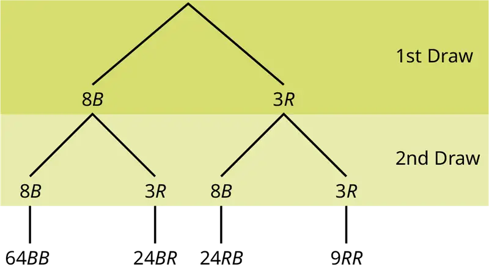
The first set of branches represents the first draw. The second set of branches represents the second draw. Each of the outcomes is distinct. In fact, we can list each red ball as R1, R2, and R3 and each blue ball as B1, B2, B3, B4, B5, B6, B7, and B8. Then the nine RR outcomes can be written as:
R1R1
R1R2
R1R3
R2R1
R2R2
R2R3
R3R1
R3R2
R3R3
The other outcomes are similar.
There are a total of 11 balls in the urn. Draw two balls, one at a time, with replacement. There are 11(11) = 121 outcomes, the size of the sample space.
a. List the 24 BR outcomes: B1R1, B1R2, B1R3, ...
b. Using the tree diagram, calculate P(RR).
c. Using the tree diagram, calculate P(RB OR BR).
d. Using the tree diagram, calculate P(R on 1st draw AND B on 2nd draw).
e. Using the tree diagram, calculate P(R on 2nd draw GIVEN B on 1st draw).
f. Using the tree diagram, calculate P(BB).
g. Using the tree diagram, calculate P(B on the 2nd draw given R on the first draw).
Solution
a.
B1R1
B1R2
B1R3
B2R1
B2R2
B2R3
B3R1
B3R2
B3R3
B4R1
B4R2
B4R3
B5R1
B5R2
B5R3
B6R1
B6R2
B6R3
B7R1
B7R2
B7R3
B8R1
B8R2
B8R3
b. P(RR) = \(\left( \frac{3}{11} \right)\left( \frac{3}{11} \right)\) = \(\frac{9}{121}\)
c. P(RB OR BR) = \(\left( \frac{3}{11} \right)\left( \frac{8}{11} \right)\) + \(\left( \frac{8}{11} \right)\left( \frac{3}{11} \right)\) = \(\frac{48}{121}\)
d. P(R on 1st draw AND B on 2nd draw) = P(RB) = \(\left( \frac{3}{11} \right)\left( \frac{8}{11} \right)\) = \(\frac{24}{121}\)
e. P(R on 2nd draw GIVEN B on 1st draw) = P(R on 2nd|B on 1st) = \(\frac{24}{88}\) = \(\frac{3}{11}\)
This problem is a conditional one. The sample space has been reduced to those outcomes that already have a blue on the first draw. There are 24 + 64 = 88 possible outcomes (24 BR and 64 BB). Twenty-four of the 88 possible outcomes are BR. \(\frac{24}{88}\) = \(\frac{3}{11}\).
f. P(BB) = \(\frac{64}{121}\)
g. P(B on 2nd draw|R on 1st draw) = \(\frac{8}{11}\)
There are 9 + 24 outcomes that have R on the first draw (9 RR and 24 RB). The sample space is then 9 + 24 = 33. 24 of the 33 outcomes have B on the second draw. The probability is then \(\frac{24}{33}\).
Try It
In a standard deck, there are 52 cards. 12 cards are face cards (event F) and 40 cards are not face cards (event N). Draw two cards, one at a time, with replacement. All possible outcomes are shown in the tree diagram as frequencies. Using the tree diagram, calculate P(FF).
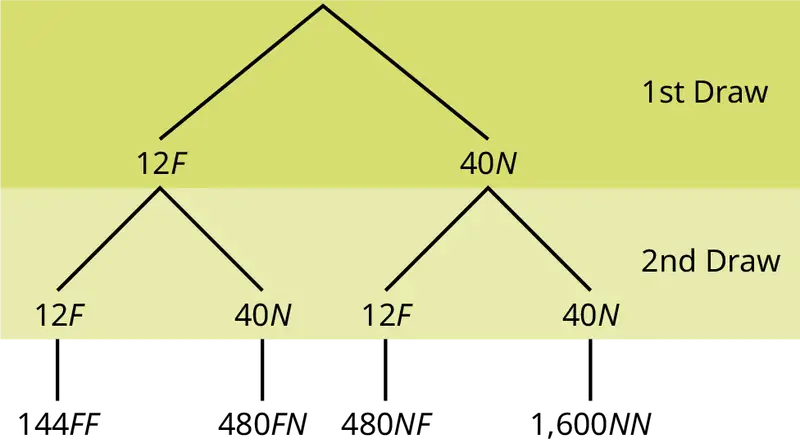
Example 3.25
An urn has three red marbles and eight blue marbles in it. Draw two marbles, one at a time, this time without replacement, from the urn. "Without replacement" means that you do not put the first ball back before you select the second marble. Following is a tree diagram for this situation. The branches are labeled with probabilities instead of frequencies. The numbers at the ends of the branches are calculated by multiplying the numbers on the two corresponding branches, for example, \(\left( \frac{3}{11} \right)\left( \frac{2}{10} \right)=\frac{6}{110}\).
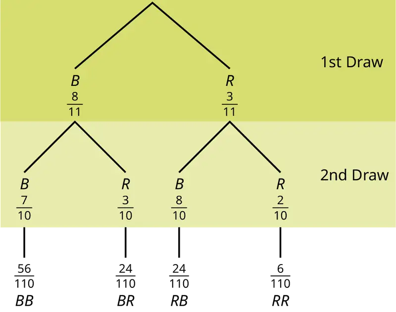
NOTE
If you draw a red on the first draw from the three red possibilities, there are two red marbles left to draw on the second draw. You do not put back or replace the first marble after you have drawn it. You draw without replacement, so that on the second draw there are ten marbles left in the urn.
Calculate the following probabilities using the tree diagram.
a. P(RR) = ________
b. Fill in the blanks:
P(RB OR BR) = \(\left( \frac{3}{11} \right)\left( \frac{8}{10} \right)\ +\ \text{(\_\_\_)(\_\_\_)}\ =\ \frac{48}{110}\)
c. P(R on 2nd|B on 1st) =
d. Fill in the blanks.
P(R on 1st AND B on 2nd) = P(RB) = (___)(___) = \(\frac{24}{110}\)
e. Find P(BB).
f. Find P(B on 2nd|R on 1st).
Solution
a. P(RR) = \(\left( \frac{3}{11} \right)\left( \frac{2}{10} \right)=\frac{6}{110}\)
b. P(RB OR BR) = \(\left( \frac{3}{11} \right)\left( \frac{8}{10} \right)\) + \(\left( \frac{8}{11} \right)\left( \frac{3}{10} \right)\) = \(\frac{48}{110}\)
c. P(R on 2nd|B on 1st) = \(\frac{3}{10}\)
d. P(R on 1st AND B on 2nd) = P(RB) = \(\left( \frac{3}{11} \right)\left( \frac{8}{10} \right)\) = \(\frac{24}{110}\)
e. P(BB) = \(\left( \frac{8}{11} \right)\left( \frac{7}{10} \right)\)
f. Using the tree diagram, P(B on 2nd|R on 1st) = P(R|B) = \(\frac{8}{10}\).
If we are using probabilities, we can label the tree in the following general way.
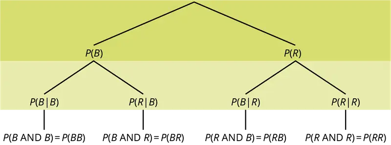
- P(R|R) here means P(R on 2nd|R on 1st)
- P(B|R) here means P(B on 2nd|R on 1st)
- P(R|B) here means P(R on 2nd|B on 1st)
- P(B|B) here means P(B on 2nd|B on 1st)
Try It
In a standard deck, there are 52 cards. Twelve cards are face cards (F) and 40 cards are not face cards (N). Draw two cards, one at a time, without replacement. The tree diagram is labeled with all possible probabilities.
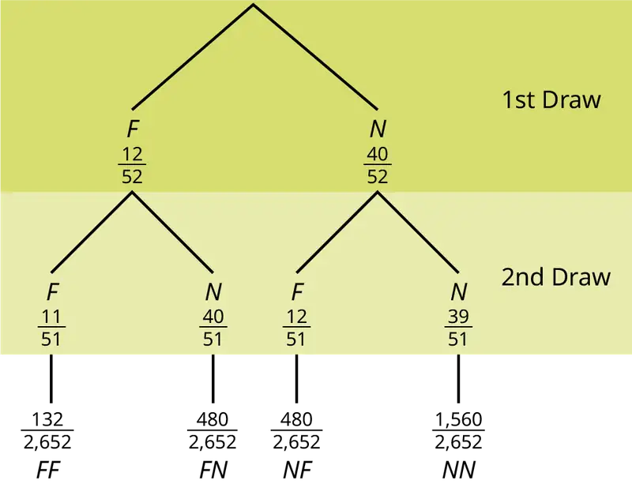
- Find P(FN OR NF).
- Find P(N|F).
- Find P(at most one face card).
Hint: "At most one face card" means zero or one face card. - Find P(at least one face card).
Hint: "At least one face card" means one or two face cards.
Example 3.26
A litter of kittens available for adoption at the Humane Society has four tabby kittens and five black kittens. A family comes in and randomly selects two kittens (without replacement) for adoption.
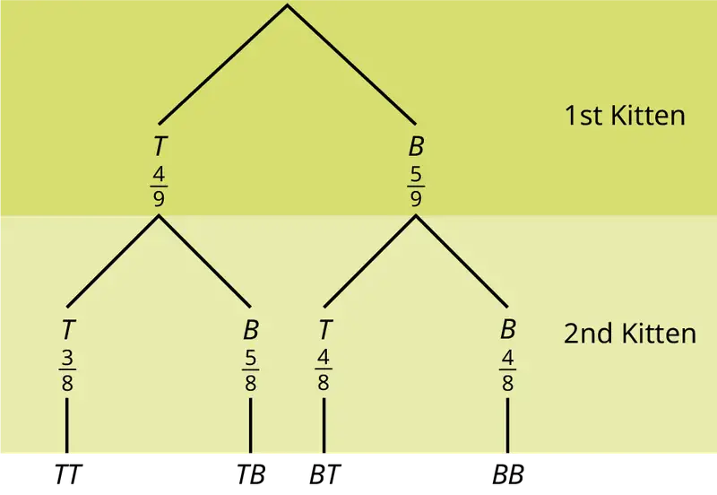
- What is the probability that both kittens are tabby?
a.\(\left( \frac{1}{2} \right)\left( \frac{1}{2} \right)\) b.\(\left( \frac{4}{9} \right)\left( \frac{4}{9} \right)\) c.\(\left( \frac{4}{9} \right)\left( \frac{3}{8} \right)\) d.\(\left( \frac{4}{9} \right)\left( \frac{5}{9} \right)\) - What is the probability that one kitten of each coloring is selected?
a.\(\left( \frac{4}{9} \right)\left( \frac{5}{9} \right)\) b.\(\left( \frac{4}{9} \right)\left( \frac{5}{8} \right)\) c.\(\left( \frac{4}{9} \right)\left( \frac{5}{9} \right)+\left( \frac{5}{9} \right)\left( \frac{4}{9} \right)\) d.\(\left( \frac{4}{9} \right)\left( \frac{5}{8} \right)+\left( \frac{5}{9} \right)\left( \frac{4}{8} \right)\) - What is the probability that a tabby is chosen as the second kitten when a black kitten was chosen as the first?
- What is the probability of choosing two kittens of the same color?
Solution
a. c, b. d, c. \(\frac{4}{8}\), d. \(\frac{32}{72}\)
Try It
Suppose there are four red balls and three yellow balls in a box. Two balls are drawn from the box without replacement. What is the probability that one ball of each coloring is selected?
Venn Diagram¶
A Venn diagram is a picture that represents the outcomes of an experiment. It generally consists of a box that represents the sample space S together with circles or ovals. The circles or ovals represent events.
Example 3.27
Suppose an experiment has the outcomes 1, 2, 3, ... , 12 where each outcome has an equal chance of occurring. Let event A = {1, 2, 3, 4, 5, 6} and event B = {6, 7, 8, 9}. Then A AND B = {6} and A OR B = {1, 2, 3, 4, 5, 6, 7, 8, 9}. The Venn diagram is as follows:
Try It
Suppose an experiment has outcomes black, white, red, orange, yellow, green, blue, and purple, where each outcome has an equal chance of occurring. Let event C = {green, blue, purple} and event P = {red, yellow, blue}. Then C AND P = {blue} and C OR P = {green, blue, purple, red, yellow}. Draw a Venn diagram representing this situation.
Example 3.28
Flip two fair coins. Let A = tails on the first coin. Let B = tails on the second coin. Then A = {TT, TH} and B = {TT, HT}. Therefore, A AND B = {TT}. A OR B = {TH, TT, HT}.
The sample space when you flip two fair coins is X = {HH, HT, TH, TT}. The outcome HH is in NEITHER A NOR B. The Venn diagram is as follows:
Try It
Roll a fair, six-sided die. Let A = a prime number of dots is rolled. Let B = an odd number of dots is rolled. Then A = {2, 3, 5} and B = {1, 3, 5}. Therefore, A AND B = {3, 5}. A OR B = {1, 2, 3, 5}. The sample space for rolling a fair die is S = {1, 2, 3, 4, 5, 6}. Draw a Venn diagram representing this situation.
Example 3.29
Forty percent of the students at a local college belong to a club and 50% work part time. Five percent of the students work part time and belong to a club. Draw a Venn diagram showing the relationships. Let C = student belongs to a club and PT = student works part time.
If a student is selected at random, find
- the probability that the student belongs to a club. P(C) = 0.40
- the probability that the student works part time. P(PT) = 0.50
- the probability that the student belongs to a club AND works part time. P(C AND PT) = 0.05
- the probability that the student belongs to a club given that the student works part time. \(P\text{(}C|PT\text{)}=\frac{P\text{(}C\ \text{AND}\ PT\text{)}}{P\text{(}PT\text{)}}=\frac{0.05}{0.50}=0.1\)
- the probability that the student belongs to a club OR works part time. P(C OR PT) = P(C) + P(PT) - P(C AND PT) = 0.40 + 0.50 - 0.05 = 0.85
Try It
Fifty percent of the workers at a factory work a second job, 25% have a spouse who also works, 5% work a second job and have a spouse who also works. Draw a Venn diagram showing the relationships. Let W = works a second job and S = spouse also works.
Example 3.30
A person with type O blood and a negative Rh factor (Rh-) can donate blood to any person with any blood type. Four percent of African Americans have type O blood and a negative RH factor, 5−10% of African Americans have the Rh- factor, and 51% have type O blood.
The “O” circle represents the African Americans with type O blood. The “Rh-“ oval represents the African Americans with the Rh- factor.
We will take the average of 5% and 10% and use 7.5% as the percent of African Americans who have the Rh- factor. Let O = African American with Type O blood and R = African American with Rh- factor.
- P(O) = ___________
- P(R) = ___________
- P(O AND R) = ___________
- P(O OR R) = ____________
- In the Venn Diagram, describe the overlapping area using a complete sentence.
- In the Venn Diagram, describe the area in the rectangle but outside both the circle and the oval using a complete sentence.
Solution
a. 0.51; b. 0.075; c. 0.04; d. 0.545; e. The area represents the African Americans that have type O blood and the Rh- factor. f. The area represents the African Americans that have neither type O blood nor the Rh- factor.
Try It
In a bookstore, the probability that the customer buys a novel is 0.6, and the probability that the customer buys a non-fiction book is 0.4. Suppose that the probability that the customer buys both is 0.2.
- Draw a Venn diagram representing the situation.
- Find the probability that the customer buys either a novel or a non-fiction book.
- In the Venn diagram, describe the overlapping area using a complete sentence.
- Suppose that some customers buy only compact disks. Draw an oval in your Venn diagram representing this event.
3.6 Probability Topics¶
Lab: Probability Topics
Class time:
Names:
Student Learning Outcomes
- The student will use theoretical and empirical methods to estimate probabilities.
- The student will appraise the differences between the two estimates.
- The student will demonstrate an understanding of long-term relative frequencies.
Do the Experiment
Count out 40 mixed-color M&Ms®, which is approximately one small bag’s worth. Record the number of each color in Table 3.12. Use the information from this table to complete Table 3.13.
Next, put the M&Ms in a cup. The experiment is to pick two M&Ms, one at a time. Do not look at them as you pick them. The first time through, replace the first M&M before picking the second one. Record the results in the “With Replacement” column of Table 3.14. Do this 12 times.
The second time through, after picking the first M&M, do not replace it before picking the second one. Then, pick the second one. Record the results in the “Without Replacement” column section of Table 3.13. After you record the pick, put both M&Ms back. Do this a total of 12 times, also.
Use the data from Table 3.14 to calculate the empirical probabilities shown in Table 3.15.
Leave your answers in unreduced fractional form. Do not multiply out any fractions.
Table 3.12 Population
| Color | Quantity |
|---|---|
| Yellow (Y) | |
| Green (G) | |
| Blue (BL) | |
| Brown (B) | |
| Orange (O) | |
| Red (R) |
Table 3.13 Theoretical Probabilities
| With Replacement | Without Replacement | |
|---|---|---|
| P(2 reds) | ||
| P(R1B2 OR B1R2) | ||
| P(R1 AND G2) | ||
| P(G2|R1) | ||
| P(no yellows) | ||
| P(doubles) | ||
| P(no doubles) |
NOTE
G2 = green on second pick; R1 = red on first pick; B1 = brown on first pick; B2 = brown on second pick; doubles = both picks are the same colour.
Table 3.14 Empirical Results
| With Replacement | Without Replacement |
|---|---|
| ( __ , __ ) ( __ , __ ) | ( __ , __ ) ( __ , __ ) |
| ( __ , __ ) ( __ , __ ) | ( __ , __ ) ( __ , __ ) |
| ( __ , __ ) ( __ , __ ) | ( __ , __ ) ( __ , __ ) |
| ( __ , __ ) ( __ , __ ) | ( __ , __ ) ( __ , __ ) |
| ( __ , __ ) ( __ , __ ) | ( __ , __ ) ( __ , __ ) |
| ( __ , __ ) ( __ , __ ) | ( __ , __ ) ( __ , __ ) |
| ( __ , __ ) ( __ , __ ) | ( __ , __ ) ( __ , __ ) |
| ( __ , __ ) ( __ , __ ) | ( __ , __ ) ( __ , __ ) |
| ( __ , __ ) ( __ , __ ) | ( __ , __ ) ( __ , __ ) |
| ( __ , __ ) ( __ , __ ) | ( __ , __ ) ( __ , __ ) |
| ( __ , __ ) ( __ , __ ) | ( __ , __ ) ( __ , __ ) |
| ( __ , __ ) ( __ , __ ) | ( __ , __ ) ( __ , __ ) |
Table 3.15 Empirical Probabilities
| With Replacement | Without Replacement | |
|---|---|---|
| P(2 reds) | ||
| P(R1B2 OR B1R2) | ||
| P(R1 AND G2) | ||
| P(G2|R1) | ||
| P(no yellows) | ||
| P(doubles) | ||
| P(no doubles) |
Discussion Questions
-
Why are the “With Replacement” and “Without Replacement” probabilities different?
-
Convert P(no yellows) to decimal format for both Theoretical “With Replacement” and for Empirical “With Replacement”. Round to four decimal places.
a. Theoretical “With Replacement”: P(no yellows) = _______
b. Empirical “With Replacement”: P(no yellows) = _______
c. Are the decimal values “close”? Did you expect them to be closer together or farther apart? Why?
-
If you increased the number of times you picked two M&Ms to 240 times, why would empirical probability values change?
-
Would this change (see part 3) cause the empirical probabilities and theoretical probabilities to be closer together or farther apart? How do you know?
-
Explain the differences in what P(G1 AND R2) and P(R1|G2) represent. Hint: Think about the sample space for each probability.
Chapter Review¶
Key Terms¶
- AND Event
- An outcome is in the event A AND B if the outcome is in both A AND B at the same time.
- Complement Event
- The complement of event A consists of all outcomes that are NOT in A.
- Conditional Probability
- the likelihood that an event will occur given that another event has already occurred
- Conditional Probability of A GIVEN B
- P(A|B) is the probability that event A will occur given that the event B has already occurred.
- Conditional Probability of One Event Given Another Event
- P(A|B) is the probability that event A will occur given that the event B has already occurred.
- contingency table
- the method of displaying a frequency distribution as a table with rows and columns to show how two variables may be dependent (contingent) upon each other; the table provides an easy way to calculate conditional probabilities.
- Dependent Events
- If two events are NOT independent, then we say that they are dependent.
- Equally Likely
- Each outcome of an experiment has the same probability.
- Event
- a subset of the set of all outcomes of an experiment; the set of all outcomes of an experiment is called a sample space and is usually denoted by S. An event is an arbitrary subset in S. It can contain one outcome, two outcomes, no outcomes (empty subset), the entire sample space, and the like. Standard notations for events are capital letters such as A, B, C, and so on.
- Experiment
- a planned activity carried out under controlled conditions
- Independent Events
- The occurrence of one event has no effect on the probability of the occurrence of another event. Events A and B are independent if one of the following is true: P(A|B) = P(A); P(B|A) = P(B); P(A AND B) = P(A)P(B)
- Mutually Exclusive
- Two events are mutually exclusive if the probability that they both happen at the same time is zero. If events A and B are mutually exclusive, then P(A AND B) = 0.
- Or Event
- An outcome is in the event A OR B if the outcome is in A or is in B or is in both A and B.
- Outcome
- a particular result of an experiment
- Probability
- a number between zero and one, inclusive, that gives the likelihood that a specific event will occur; the foundation of statistics is given by the following 3 axioms (by A.N. Kolmogorov, 1930’s): Let S denote the sample space and A and B are two events in S. Then: 0 ≤ P(A) ≤ 1; If A and B are any two mutually exclusive events, then P(A OR B) = P(A) + P(B).; P(S) = 1
- Sample Space
- the set of all possible outcomes of an experiment
- Tree Diagram
- the useful visual representation of a sample space and events in the form of a “tree” with branches marked by possible outcomes together with associated probabilities (frequencies, relative frequencies)
- Venn Diagram
- the visual representation of a sample space and events in the form of circles or ovals showing their intersections
Chapter Review¶
3.1 Terminology¶
In this module we learned the basic terminology of probability. The set of all possible outcomes of an experiment is called the sample space. Events are subsets of the sample space, and they are assigned a probability that is a number between zero and one, inclusive.
3.2 Independent and Mutually Exclusive Events¶
Two events A and B are independent if the knowledge that one occurred does not affect the chance the other occurs. If two events are not independent, then we say that they are dependent.
In sampling with replacement, each member of a population is replaced after it is picked, so that member has the possibility of being chosen more than once, and the events are considered to be independent. In sampling without replacement, each member of a population may be chosen only once, and the events are considered not to be independent. When events do not share outcomes, they are mutually exclusive of each other.
3.3 Two Basic Rules of Probability¶
The multiplication rule and the addition rule are used for computing the probability of A and B, as well as the probability of A or B for two given events A, B defined on the sample space. In sampling with replacement each member of a population is replaced after it is picked, so that member has the possibility of being chosen more than once, and the events are considered to be independent. In sampling without replacement, each member of a population may be chosen only once, and the events are considered to be not independent. The events A and B are mutually exclusive events when they do not have any outcomes in common.
3.4 Contingency Tables¶
There are several tools you can use to help organize and sort data when calculating probabilities. Contingency tables help display data and are particularly useful when calculating probabilites that have multiple dependent variables.
3.5 Tree and Venn Diagrams¶
A tree diagram use branches to show the different outcomes of experiments and makes complex probability questions easy to visualize.
A Venn diagram is a picture that represents the outcomes of an experiment. It generally consists of a box that represents the sample space S together with circles or ovals. The circles or ovals represent events. A Venn diagram is especially helpful for visualizing the OR event, the AND event, and the complement of an event and for understanding conditional probabilities.
Formula Review¶
3.1 Terminology¶
A and B are events
P(S) = 1 where S is the sample space
0 ≤ P(A) ≤ 1
P(A|B) = \(\frac{P\text{(}A\ \text{AND}\ B\text{)}}{P\text{(}B\text{)}}\)
3.2 Independent and Mutually Exclusive Events¶
If A and B are independent, P(A AND B) = P(A)P(B), P(A|B) = P(A) and P(B|A) = P(B).
If A and B are mutually exclusive, P(A OR B) = P(A) + P(B) and P(A AND B) = 0.
3.3 Two Basic Rules of Probability¶
The multiplication rule: P(A AND B) = P(A|B)P(B)
The addition rule: P(A OR B) = P(A) + P(B) - P(A AND B)
References¶
References
3.1 Terminology
“Countries List by Continent.” Worldatlas, 2013. Available online at http://www.worldatlas.com/cntycont.htm (accessed May 2, 2013).
3.2 Independent and Mutually Exclusive Events
Lopez, Shane, Preety Sidhu. “U.S. Teachers Love Their Lives, but Struggle in the Workplace.” Gallup Wellbeing, 2013. http://www.gallup.com/poll/161516/teachers-love-lives-struggle-workplace.aspx (accessed May 2, 2013).
Data from Gallup. Available online at www.gallup.com/ (accessed May 2, 2013).
3.3 Two Basic Rules of Probability
DiCamillo, Mark, Mervin Field. “The File Poll.” Field Research Corporation. Available online at http://www.field.com/fieldpollonline/subscribers/Rls2443.pdf (accessed May 2, 2013).
Rider, David, “Ford support plummeting, poll suggests,” The Star, September 14, 2011. Available online at http://www.thestar.com/news/gta/2011/09/14/ford_support_plummeting_poll_suggests.html (accessed May 2, 2013).
“Mayor’s Approval Down.” News Release by Forum Research Inc. Available online at http://www.forumresearch.com/forms/News Archives/News Releases/74209_TO_Issues_-_Mayoral_Approval_%28Forum_Research%29%2820130320%29.pdf (accessed May 2, 2013).
“Roulette.” Wikipedia. Available online at http://en.wikipedia.org/wiki/Roulette (accessed May 2, 2013).
Shin, Hyon B., Robert A. Kominski. “Language Use in the United States: 2007.” United States Census Bureau. Available online at http://www.census.gov/hhes/socdemo/language/data/acs/ACS-12.pdf (accessed May 2, 2013).
Data from the Baseball-Almanac, 2013. Available online at www.baseball-almanac.com (accessed May 2, 2013).
Data from U.S. Census Bureau.
Data from the Wall Street Journal.
Data from The Roper Center: Public Opinion Archives at the University of Connecticut. Available online at http://www.ropercenter.uconn.edu/ (accessed May 2, 2013).
Data from Field Research Corporation. Available online at www.field.com/fieldpollonline (accessed May 2,2 013).
3.4 Contingency Tables
“Blood Types.” American Red Cross, 2013. Available online at http://www.redcrossblood.org/learn-about-blood/blood-types (accessed May 3, 2013).
Data from the National Center for Health Statistics, part of the United States Department of Health and Human Services.
Data from United States Senate. Available online at www.senate.gov (accessed May 2, 2013).
Haiman, Christopher A., Daniel O. Stram, Lynn R. Wilkens, Malcom C. Pike, Laurence N. Kolonel, Brien E. Henderson, and Loīc Le Marchand. “Ethnic and Racial Differences in the Smoking-Related Risk of Lung Cancer.” The New England Journal of Medicine, 2013. Available online at http://www.nejm.org/doi/full/10.1056/NEJMoa033250 (accessed May 2, 2013).
“Human Blood Types.” Unite Blood Services, 2011. Available online at http://www.unitedbloodservices.org/learnMore.aspx (accessed May 2, 2013).
Samuel, T. M. “Strange Facts about RH Negative Blood.” eHow Health, 2013. Available online at http://www.ehow.com/facts_5552003_strange-rh-negative-blood.html (accessed May 2, 2013).
“United States: Uniform Crime Report – State Statistics from 1960–2011.” The Disaster Center. Available online at http://www.disastercenter.com/crime/ (accessed May 2, 2013).
3.5 Tree and Venn Diagrams
Data from Clara County Public H.D.
Data from the American Cancer Society.
Data from The Data and Story Library, 1996. Available online at http://lib.stat.cmu.edu/DASL/ (accessed May 2, 2013).
Data from the Federal Highway Administration, part of the United States Department of Transportation.
Data from the United States Census Bureau, part of the United States Department of Commerce.
Data from USA Today.
“Environment.” The World Bank, 2013. Available online at http://data.worldbank.org/topic/environment (accessed May 2, 2013).
“Search for Datasets.” Roper Center: Public Opinion Archives, University of Connecticut., 2013. Available online at http://www.ropercenter.uconn.edu/data_access/data/search_for_datasets.html (accessed May 2, 2013).
Practice¶
3.1 Terminology¶
1. In a particular college class, there are men and women students. Some students have long hair and some students have short hair. Write the symbols for the probabilities of the events for parts a through j. (Note that you cannot find numerical answers here. You were not given enough information to find any probability values yet; concentrate on understanding the symbols.)
- Let W be the event that a student is a woman.
- Let M be the event that a student is a man.
- Let S be the event that a student has short hair.
- Let L be the event that a student has long hair.
- The probability that a student does not have long hair.
- The probability that a student is a man or has short hair.
- The probability that a student is a woman and has long hair.
- The probability that a student is a man, given that the student has long hair.
- The probability that a student has long hair, given that the student is a man.
- Of all the women students, the probability that a student has short hair.
- Of all students with long hair, the probability that a student is a woman.
- The probability that a student is a woman or has long hair.
- The probability that a randomly selected student is a man student with short hair.
- The probability that a student is a woman.
Answer
- P(L′) = P(S)
- P(M OR S)
- P(F AND L)
- P(M|L)
- P(L|M)
- P(S|F)
- P(W|L)
- P(F OR L)
- P(M AND S)
- P(F)
Use the following information to answer the next four exercises. A box is filled with several party favors. It contains 12 hats, 15 noisemakers, ten finger traps, and five bags of confetti. One party favor is chosen from the box at random.
Let H = the event of getting a hat.
Let N = the event of getting a noisemaker.
Let F = the event of getting a finger trap.
Let C = the event of getting a bag of confetti.
2. Find P(H).
3. Find P(N).
Answer
P(N) = \(\frac{15}{42}\) = \(\frac{5}{14}\) = 0.36
4. Find P(F).
5. Find P(C).
Answer
P(C) = \(\frac{5}{42}\) = 0.12
Use the following information to answer the next six exercises. A jar of 150 jelly beans contains 22 red jelly beans, 38 yellow, 20 green, 28 purple, 26 blue, and the rest are orange. One jelly bean is chosen from the box at random.
Let B = the event of getting a blue jelly bean
Let G = the event of getting a green jelly bean.
Let O = the event of getting an orange jelly bean.
Let P = the event of getting a purple jelly bean.
Let R = the event of getting a red jelly bean.
Let Y = the event of getting a yellow jelly bean.
6. Find P(B).
7. Find P(G).
Answer
P(G) = \(\frac{20}{150}\) = \(\frac{2}{15}\) = 0.13
8. Find P(P).
9. Find P(R).
Answer
P(R) = \(\frac{22}{150}\) = \(\frac{11}{75}\) = 0.15
10. Find P(Y).
11. Find P(O).
Answer
P(O) = \(\frac{150-22-38-20-28-26}{150}\) = \(\frac{16}{150}\) = \(\frac{8}{75}\) = 0.11
Use the following information to answer the next six exercises. There are 23 countries in North America, 12 countries in South America, 47 countries in Europe, 44 countries in Asia, 54 countries in Africa, and 14 in Oceania (Pacific Ocean region).
Let A = the event that a country is in Asia.
Let E = the event that a country is in Europe.
Let F = the event that a country is in Africa.
Let N = the event that a country is in North America.
Let O = the event that a country is in Oceania.
Let S = the event that a country is in South America.
12. Find P(A).
13. Find P(E).
Answer
P(E) = \(\frac{47}{194}\) = 0.24
14. Find P(F).
15. Find P(N).
Answer
P(N) = \(\frac{23}{194}\) = 0.12
16. Find P(O).
17. Find P(S).
Answer
P(S) = \(\frac{12}{194}\) = \(\frac{6}{97}\) = 0.06
18. What is the probability of drawing a red card in a standard deck of 52 cards?
19. What is the probability of drawing a club in a standard deck of 52 cards?
Answer
\(\frac{13}{52}\) = \(\frac{1}{4}\) = 0.25
20. What is the probability of rolling an even number of dots with a fair, six-sided die numbered one through six?
21. What is the probability of rolling a prime number of dots with a fair, six-sided die numbered one through six?
Answer
\(\frac{3}{6}\) = \(\frac{1}{2}\) = 0.5
Use the following information to answer the next two exercises. You see a game at a local fair. You have to throw a dart at a color wheel. Each section on the color wheel is equal in area.
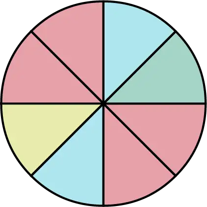
Let B = the event of landing on blue.
Let R = the event of landing on red.
Let G = the event of landing on green.
Let Y = the event of landing on yellow.
22. If you land on Y, you get the biggest prize. Find P(Y).
23. If you land on red, you don’t get a prize. What is P(R)?
Answer
\(P(R)=\frac{4}{8}=0.5\)
Use the following information to answer the next ten exercises. On a baseball team, there are infielders and outfielders. Some players are great hitters, and some players are not great hitters.
Let I = the event that a player in an infielder.
Let O = the event that a player is an outfielder.
Let H = the event that a player is a great hitter.
Let N = the event that a player is not a great hitter.
24. Write the symbols for the probability that a player is not an outfielder.
25. Write the symbols for the probability that a player is an outfielder or is a great hitter.
Answer
P(O OR H)
26. Write the symbols for the probability that a player is an infielder and is not a great hitter.
27. Write the symbols for the probability that a player is a great hitter, given that the player is an infielder.
Answer
P(H|I)
28. Write the symbols for the probability that a player is an infielder, given that the player is a great hitter.
29. Write the symbols for the probability that of all the outfielders, a player is not a great hitter.
Answer
P(N|O)
30. Write the symbols for the probability that of all the great hitters, a player is an outfielder.
31. Write the symbols for the probability that a player is an infielder or is not a great hitter.
Answer
P(I OR N)
32. Write the symbols for the probability that a player is an outfielder and is a great hitter.
33. Write the symbols for the probability that a player is an infielder.
Answer
P(I)
34. What is the word for the set of all possible outcomes?
35. What is conditional probability?
Answer
The likelihood that an event will occur given that another event has already occurred.
36. A shelf holds 12 books. Eight are fiction and the rest are nonfiction. Each is a different book with a unique title. The fiction books are numbered one to eight. The nonfiction books are numbered one to four. Randomly select one book
Let F = event that book is fiction
Let N = event that book is nonfiction
What is the sample space?
37. What is the sum of the probabilities of an event and its complement?
Answer
1
Use the following information to answer the next two exercises. You are rolling a fair, six-sided number cube. Let E = the event that it lands on an even number. Let M = the event that it lands on a multiple of three.
38. What does P(E|M) mean in words?
39. What does P(E OR M) mean in words?
Answer
the probability of landing on an even number or a multiple of three
3.2 Independent and Mutually Exclusive Events¶
40. E and F are mutually exclusive events. P(E) = 0.4; P(F) = 0.5. Find P(E∣F).
41. J and K are independent events. P(J|K) = 0.3. Find P(J).
Answer
P(J) = 0.3
42. U and V are mutually exclusive events. P(U) = 0.26; P(V) = 0.37. Find:
- P(U AND V) =
- P(U|V) =
- P(U OR V) =
43. Q and R are independent events. P(Q) = 0.4 and P(Q AND R) = 0.1. Find P(R).
Answer
P(Q AND R) = P(Q)P(R)
0.1 = (0.4)P(R)
P(R) = 0.25
3.3 Two Basic Rules of Probability¶
Use the following information to answer the next ten exercises. A local restaurant knows that the probability that a customer will order a pizza is 87%. The restaurant also knows that the probability that a customer will order a salad is 32%. Of the customers who order pizzas, 55% of them also order a salad.
In this problem, let:
- Z = event that a customer orders a pizza
- S = event that a customer orders a salad
Suppose that one customer is randomly selected.
44. Find P(Z).
Answer
Find P(S) : P(S) = 0.87
45. Find P(S).
Answer
Find P(S) : P(S) = 0.32
46. Find P(S|Z).
Answer
Find P(S | Z) : P(S | Z) = 0.55
47. In words, what is S|Z?
Answer
In words, what is S | Z? : S | Z means, given that the customer has ordered pizza, the person also orders a salad.
48. Find \(P(ZANDS)\).
Answer
Find \(P(ZANDS)\): \(P(ZANDS)\)= 0.4785
49. In words, what is \(ZANDS\)?
Answer
In words, what is \(ZANDS\)? : \(ZANDS\) represents the event that a customer orders a pizza and salad.
50. Are P and S independent events? Show why or why not.
Answer
Are P and S independent events? Show why or why not. No, because P(S) does not equal P(S | Z).
51. Find \(P(ZORS)\).
Answer
Find \(P(ZORS)\): \(P(ZORS)\)= 0.7115
52. In words, what is \(ZORS\)?
Answer
In words, what is \(ZORS\)?
\(ZORS\) represents the event that a customer orders a pizza or salad.
53. Are Z and S mutually exclusive events? Show why or why not.
Answer
Are Z and S mutually exclusive events? Show why or why not. No, because P(S and Z) does not equal 0.
3.4 Contingency Tables¶
Use the following information to answer the next four exercises. Table 3.16 shows a random sample of musicians and how they learned to play their instruments.
Table 3.16
| Gender | Self-taught | Studied in School | Private Instruction | Total |
|---|---|---|---|---|
| Woman | 12 | 38 | 22 | 72 |
| Man | 19 | 24 | 15 | 58 |
| Total | 31 | 62 | 37 | 130 |
54. Find P(musician is a woman).
55. Find P(musician is a man AND had private instruction).
Answer
P(musician is a male AND had private instruction) = \(\frac{15}{130}\) = \(\frac{3}{26}\) = 0.12
56. Find P(musician is a woman OR is self taught).
57. Are the events “being a woman musician” and “learning music in school” mutually exclusive events?
Answer
The events are not mutually exclusive. It is possible to be a woman musician who learned music in school.
3.5 Tree and Venn Diagrams¶
58. The probability that a man develops some form of cancer in his lifetime is 0.4567. The probability that a man has at least one false positive test result (meaning the test comes back for cancer when the man does not have it) is 0.51. Let: C = a man develops cancer in his lifetime; P = man has at least one false positive. Construct a tree diagram of the situation.
Answer
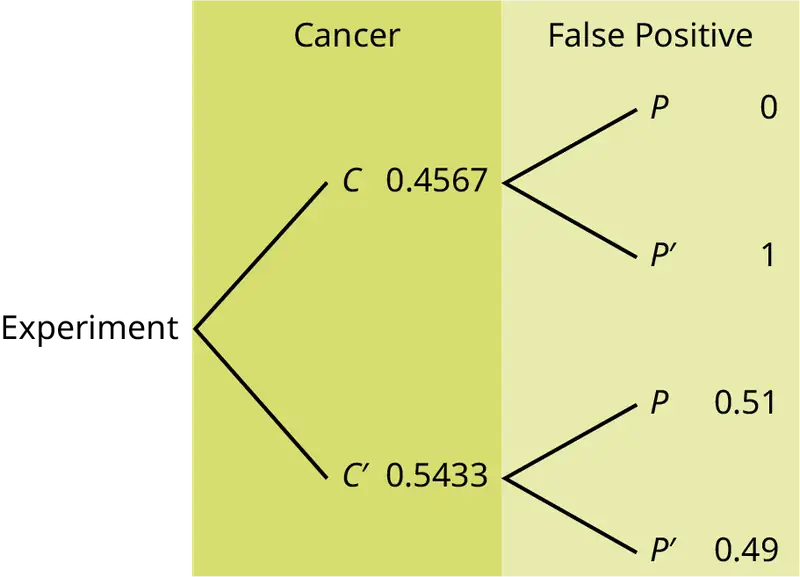
Homework¶
3.1 Terminology¶
59.
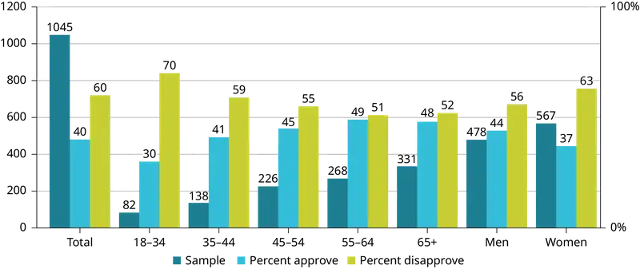
The graph in Figure 3.12 displays the sample sizes and percentages of people in different age and gender groups who were polled concerning their approval of Mayor Ford’s actions in office. The total number in the sample of all the age groups is 1,045.
- Define three events in the graph.
- Describe in words what the entry 40 means.
- Describe in words the complement of the entry in question 2.
- Describe in words what the entry 30 means.
- Out of the men and women, what percent are men?
- Out of the women, what percent disapprove of Mayor Ford?
- Out of all the age groups, what percent approve of Mayor Ford?
- Find P(Approve|Men).
- Out of the age groups, what percent are more than 44 years old?
- Find P(Approve|Age < 35).
60. Explain what is wrong with the following statements. Use complete sentences.
- If there is a 60% chance of rain on Saturday and a 70% chance of rain on Sunday, then there is a 130% chance of rain over the weekend.
- The probability that a baseball player hits a home run is greater than the probability that he gets a successful hit.
Answer
- You can't calculate the joint probability knowing the probability of both events occurring, which is not in the information given; the probabilities should be multiplied, not added; and probability is never greater than 100%
- A home run by definition is a successful hit, so he has to have at least as many successful hits as home runs.
3.2 Independent and Mutually Exclusive Events¶
Use the following information to answer the next 12 exercises. The graph shown is based on more than 170,000 interviews done by Gallup that took place from January through December in a certain year. The sample consists of employed Americans 18 years of age or older. The Emotional Health Index Scores are the sample space. We randomly sample one Emotional Health Index Score.
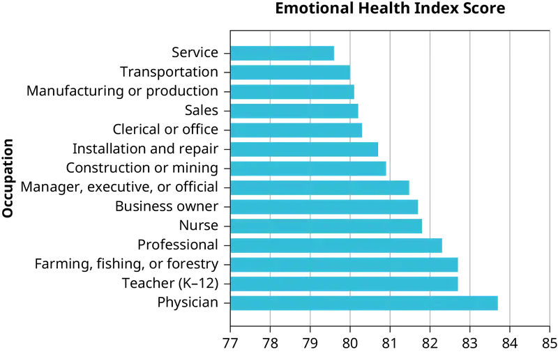
61. Find the probability that the selected occupation has an Emotional Health Index Score of 82.7.
62. Find the probability that the selected occupation has an Emotional Health Index Score of 81.0.
63. Find the probability that the selected occupation has an Emotional Health Index Score more than 81.
64. Find the probability that the selected occupation has an Emotional Health Index Score between 80.5 and 82.
65. If we know an occupation has an Emotional Health Index Score of 81.5 or more, what is the probability that it is 82.7?
66. What is the probability that an occupation has an Emotional Health Index Score of 80.7 or 82.7?
67. What is the probability that an occupation has an Emotional Health Index Score less than 80.2 given that it is already less than 81?
68. What occupation has the highest Emotional Health Index Score?
69. What occupation has the lowest Emotional Health Index Score?
70. What is the range of the data?
71. Compute the average EHIS.
72. If all occupations are equally likely for a certain individual, what is the probability that they will have an occupation with lower than average EHIS?
3.3 Two Basic Rules of Probability¶
73. Prior to the 2015 Supreme Court decision legalizing same-sex marriage nationwide, a survey reported that 61% of California registered voters approved of allowing two people of the same gender to marry and have regular marriage laws apply to them. Among 18 to 39 year olds (California registered voters), the approval rating was 78%. Six in ten California registered voters said that the upcoming Supreme Court’s ruling about the constitutionality of California’s Proposition 8 was either very or somewhat important to them. Out of those CA registered voters who support same-sex marriage, 75% say the ruling is important to them.
In this problem, let:
-
C = California registered voters who support same-sex marriage.
-
B = California registered voters who say the Supreme Court’s ruling about the constitutionality of California’s Proposition 8 is very or somewhat important to them
-
A = California registered voters who are 18 to 39 years old.
a. Find P(C).
b. Find P(B).
c. Find P(C|A).
d. Find P(B|C).
e. In words, what is C|A?
f. In words, what is B|C?
g. Find P(C AND B).
h. In words, what is C AND B?
i. Find P(C OR B).
j. Are C and B mutually exclusive events? Show why or why not.
74. A survey was conducted in a large city to measure the popularity of that city’s mayor. The survey was repeated every year for three years. The survey polled 1,046 people to measure the mayor’s popularity. Everyone polled expressed either approval or disapproval. These are the results the poll produced:
-
In Year 1, 60% of the population approved of the mayor’s actions in office.
-
In Year 2, 57% of the population approved of his actions.
-
In Year 3, the percentage of popular approval was measured at 42%.
a. What is the sample size for this study?
b. What proportion in the poll disapproved of the mayor, according to the results from Year 3?
c. How many people polled responded that they approved the mayor based on results from Year 3?
d. What is the probability that a person supported the mayor, based on the data collected in Year 2?
e. What is the probability that a person supported the mayor, based on the data collected in Year 1?
Answer
- The Forum Research surveyed 1,046 Torontonians.
- 58%
- 42% of 1,046 = 439 (rounding to the nearest integer)
- 0.57
- 0.60.
Use the following information to answer the next three exercises. The casino game, roulette, allows the gambler to bet on the probability of a ball, which spins in the roulette wheel, landing on a particular color, number, or range of numbers. The table used to place bets contains of 38 numbers, and each number is assigned to a color and a range.
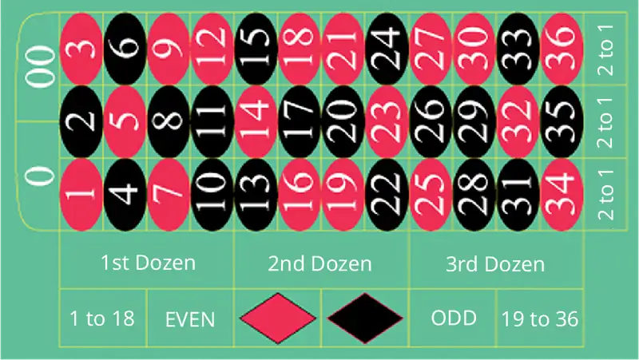
75.
- List the sample space of the 38 possible outcomes in roulette.
- You bet on red. Find P(red).
- You bet on -1st 12- (1st Dozen). Find P(-1st 12-).
- You bet on an even number. Find P(even number).
- Is getting an odd number the complement of getting an even number? Why?
- Find two mutually exclusive events.
- Are the events Even and 1st Dozen independent?
76. Compute the probability of winning the following types of bets:
- Betting on two lines that touch each other on the table as in 1-2-3-4-5-6
- Betting on three numbers in a line, as in 1-2-3
- Betting on one number
- Betting on four numbers that touch each other to form a square, as in 10-11-13-14
- Betting on two numbers that touch each other on the table, as in 10-11 or 10-13
- Betting on 0-00-1-2-3
- Betting on 0-1-2; or 0-00-2; or 00-2-3
Answer
- P(Betting on two line that touch each other on the table) = \(\frac{6}{38}\)
- P(Betting on three numbers in a line) = \(\frac{3}{38}\)
- P(Bettting on one number) = \(\frac{1}{38}\)
- P(Betting on four number that touch each other to form a square) = \(\frac{4}{38}\)
- P(Betting on two number that touch each other on the table ) = \(\frac{2}{38}\)
- P(Betting on 0-00-1-2-3) = \(\frac{5}{38}\)
- P(Betting on 0-1-2; or 0-00-2; or 00-2-3) = \(\frac{3}{38}\)
77. Compute the probability of winning the following types of bets:
- Betting on a color
- Betting on one of the dozen groups
- Betting on the range of numbers from 1 to 18
- Betting on the range of numbers 19–36
- Betting on one of the columns
- Betting on an even or odd number (excluding zero)
78. Suppose that you have eight cards. Five are green and three are yellow. The five green cards are numbered 1, 2, 3, 4, and 5. The three yellow cards are numbered 1, 2, and 3. The cards are well shuffled. You randomly draw one card.
-
G = card drawn is green
-
E = card drawn is even-numbered
a. List the sample space.
b. P(G) = _____
c. P(G|E) = _____
d. P(G AND E) = _____
e. P(G OR E) = _____
f. Are G and E mutually exclusive? Justify your answer numerically.
Answer
- {G1, G2, G3, G4, G5, Y1, Y2, Y3}
- \(\frac{5}{8}\)
- \(\frac{2}{3}\)
- \(\frac{2}{8}\)
- \(\frac{6}{8}\)
- No, because P(G AND E) does not equal 0.
79. Roll two fair dice separately. Each die has six faces.
- List the sample space.
- Let A be the event that either a three or four is rolled first, followed by an even number. Find P(A).
- Let B be the event that the sum of the two rolls is at most seven. Find P(B).
- In words, explain what “P(A|B)” represents. Find P(A|B).
- Are A and B mutually exclusive events? Explain your answer in one to three complete sentences, including numerical justification.
- Are A and B independent events? Explain your answer in one to three complete sentences, including numerical justification.
80. A special deck of cards has ten cards. Four are green, three are blue, and three are red. When a card is picked, its color of it is recorded. An experiment consists of first picking a card and then tossing a coin.
- List the sample space.
- Let A be the event that a blue card is picked first, followed by landing a head on the coin toss. Find P(A).
- Let B be the event that a red or green is picked, followed by landing a head on the coin toss. Are the events A and B mutually exclusive? Explain your answer in one to three complete sentences, including numerical justification.
- Let C be the event that a red or blue is picked, followed by landing a head on the coin toss. Are the events A and C mutually exclusive? Explain your answer in one to three complete sentences, including numerical justification.
Answer
NOTE
The coin toss is independent of the card picked first.
- {(G,H) (G,T) (B,H) (B,T) (R,H) (R,T)}
- P(A) = P(blue)P(head) = \(\left( \frac{3}{10} \right)\) \(\left( \frac{1}{2} \right)\) = \(\frac{3}{20}\)
- Yes, A and B are mutually exclusive because they cannot happen at the same time; you cannot pick a card that is both blue and also (red or green). P(A AND B) = 0
- No, A and C are not mutually exclusive because they can occur at the same time. In fact, C includes all of the outcomes of A; if the card chosen is blue it is also (red or blue). P(A AND C) = P(A) = \(\frac{3}{20}\)
81. An experiment consists of first rolling a die and then tossing a coin.
- List the sample space.
- Let A be the event that either a three or a four is rolled first, followed by landing a head on the coin toss. Find P(A).
- Let B be the event that the first and second tosses land on heads. Are the events A and B mutually exclusive? Explain your answer in one to three complete sentences, including numerical justification.
82. An experiment consists of tossing a nickel, a dime, and a quarter. Of interest is the side the coin lands on.
- List the sample space.
- Let A be the event that there are at least two tails. Find P(A).
- Let B be the event that the first and second tosses land on heads. Are the events A and B mutually exclusive? Explain your answer in one to three complete sentences, including justification.
Answer
- S = {(HHH), (HHT), (HTH), (HTT), (THH), (THT), (TTH), (TTT)}
- \(\frac{4}{8}\)
- Yes, because if A has occurred, it is impossible to obtain two tails. In other words, P(A AND B) = 0.
83. Consider the following scenario:
Let P(C) = 0.4.
Let P(D) = 0.5.
Let P(C|D) = 0.6.
- Find P(C AND D).
- Are C and D mutually exclusive? Why or why not?
- Are C and D independent events? Why or why not?
- Find P(C OR D).
- Find P(D|C).
84. Y and Z are independent events.
- Rewrite the basic Addition Rule P(Y OR Z) = P(Y) + P(Z) - P(Y AND Z) using the information that Y and Z are independent events.
- Use the rewritten rule to find P(Z) if P(Y OR Z) = 0.71 and P(Y) = 0.42.
Answer
- If Y and Z are independent, then P(Y AND Z) = P(Y)P(Z), so P(Y OR Z) = P(Y) + P(Z) - P(Y)P(Z).
- 0.5
85. G and H are mutually exclusive events. P(G) = 0.5 P(H) = 0.3
- Explain why the following statement MUST be false: P(H|G) = 0.4.
- Find P(H OR G).
- Are G and H independent or dependent events? Explain in a complete sentence.
86. According to the 2019 U.S. Census, approximately 331,449,281 people live in the United States. Of these people, 67,800,000 speak a language other than English at home. Of those who speak another language at home, 61.6% speak Spanish.
Let: E = speaks English at home; E′ = speaks another language at home; S = speaks Spanish;
Finish each probability statement by matching the correct answer.
Table 3.17
| Probability Statements | Answers |
|---|---|
| a. \(P(E')=\) | i. 0.7954 |
| b. \(P(E)=\) | ii. 0.616 |
| c. \(P(S\cap E')=\) | iii. 0.2046 |
| d. \(P(S|E')=\) | iv. 0.1260 |
Answer
- iii
- i
- iv
- ii
87. 1994, the U.S. government held a lottery to issue 55,000 Green Cards (permits for non-citizens to work legally in the U.S.). Renate Deutsch, from Germany, was one of approximately 6.5 million people who entered this lottery. Let G = won green card.
- What was Renate’s chance of winning a Green Card? Write your answer as a probability statement.
- In the summer of 1994, Renate received a letter stating she was one of 110,000 finalists chosen. Once the finalists were chosen, assuming that each finalist had an equal chance to win, what was Renate’s chance of winning a Green Card? Write your answer as a conditional probability statement. Let F = was a finalist.
- Are G and F independent or dependent events? Justify your answer numerically and also explain why.
- Are G and F mutually exclusive events? Justify your answer numerically and explain why.
88. Three professors at George Washington University did an experiment to determine if economists are more selfish than other people. They dropped 64 stamped, addressed envelopes with $10 cash in different classrooms on the George Washington campus. 44% were returned overall. From the economics classes 56% of the envelopes were returned. From the business, psychology, and history classes 31% were returned.
Let: R = money returned; E = economics classes; O = other classes
- Write a probability statement for the overall percent of money returned.
- Write a probability statement for the percent of money returned out of the economics classes.
- Write a probability statement for the percent of money returned out of the other classes.
- Is money being returned independent of the class? Justify your answer numerically and explain it.
- Based upon this study, do you think that economists are more selfish than other people? Explain why or why not. Include numbers to justify your answer.
Answer
- P(R) = 0.44
- P(R|E) = 0.56
- P(R|O) = 0.31
- No, whether the money is returned is not independent of which class the money was placed in. There are several ways to justify this mathematically, but one is that the money placed in economics classes is not returned at the same overall rate; P(R|E) ≠ P(R).
- No, this study definitely does not support that notion; in fact, it suggests the opposite. The money placed in the economics classrooms was returned at a higher rate than the money place in all classes collectively; P(R|E) > P(R).
89. The following table of data obtained from www.baseball-almanac.com shows hit information for four players. Suppose that one hit from the table is randomly selected.
Table 3.18
| Name | Single | Double | Triple | Home Run | Total Hits |
|---|---|---|---|---|---|
| Babe Ruth | 1,517 | 506 | 136 | 714 | 2,873 |
| Jackie Robinson | 1,054 | 273 | 54 | 137 | 1,518 |
| Ty Cobb | 3,053 | 724 | 295 | 117 | 4,189 |
| Hank Aaron | 2,294 | 624 | 98 | 755 | 3,771 |
| Total | 7,918 | 2,127 | 583 | 1,723 | 12,351 |
Are "the hit being made by Hank Aaron" and "the hit being a double" independent events?
- Yes, because P(hit by Hank Aaron|hit is a double) = P(hit by Hank Aaron)
- No, because P(hit by Hank Aaron|hit is a double) ≠ P(hit is a double)
- No, because P(hit is by Hank Aaron|hit is a double) ≠ P(hit by Hank Aaron)
- Yes, because P(hit is by Hank Aaron|hit is a double) = P(hit is a double)
Answer
- P(type O OR Rh-) = P(type O) + P(Rh-) – P(type O AND Rh-)
0.38 = 0.45 + 0.07 – P(type O AND Rh-);
Solve to find P(type O AND Rh-) = 0.14.
14% of people have type O, Rh- blood. - P(NOT(type O AND Rh-)) = 1 – P(type O AND Rh-) = 1 – 0.14 = 0.86
86% of people do not have type O, Rh- blood.
90. According to the American Red Cross, a person with type O blood and a negative Rh factor (Rh-) can donate blood to any person with any blood type. Their data show that 45% of people have type O blood and 7% of people have Rh- factor; 38% of people have type O or Rh- factor.
- Find the probability that a person has both type O blood and the Rh- factor.
- Find the probability that a person does NOT have both type O blood and the Rh- factor.
Answer
a. P(type O OR Rh-) = P(type O) + P(Rh-) - P(type O AND Rh-)
0.52 = 0.43 + 0.15 - P(type O AND Rh-); solve to find P(type O AND Rh-) = 0.06
6% of people have type O, Rh- blood
b. P(NOT(type O AND Rh-)) = 1 - P(type O AND Rh-) = 1 - 0.06 = 0.94
94% of people do not have type O, Rh- blood
91. At a college, 72% of courses have final exams and 46% of courses require research papers. Suppose that 32% of courses have a research paper and a final exam. Let F be the event that a course has a final exam. Let R be the event that a course requires a research paper.
- Find the probability that a course has a final exam or a research project.
- Find the probability that a course has NEITHER of these two requirements.
92. In a box of assorted cookies, 36% contain chocolate and 12% contain nuts. In the box, 8% contain both chocolate and nuts. Sean is allergic to both chocolate and nuts.
- Find the probability that a cookie contains chocolate or nuts (he can't eat it).
- Find the probability that a cookie does not contain chocolate or nuts (he can eat it).
Answer
- Let C = be the event that the cookie contains chocolate. Let N = the event that the cookie contains nuts.
- P(C OR N) = P(C) + P(N) - P(C AND N) = 0.36 + 0.12 - 0.08 = 0.40
- P(NEITHER chocolate NOR nuts) = 1 - P(C OR N) = 1 - 0.40 = 0.60
93. A college finds that 10% of students have taken a distance learning class and that 40% of students are part time students. Of the part time students, 20% have taken a distance learning class. Let D = event that a student takes a distance learning class and E = event that a student is a part time student
- Find P(D AND E).
- Find P(E|D).
- Find P(D OR E).
- Using an appropriate test, show whether D and E are independent.
- Using an appropriate test, show whether D and E are mutually exclusive.
3.4 Contingency Tables¶
Use the information in the Table 3.19 to answer the next eight exercises. The table shows the political party affiliation for various members of the U.S. Senate during two separate years when they are up for reelection.
Table 3.19
| Up for reelection: | Democratic Party | Republican Party | Other | Total |
|---|---|---|---|---|
| Year A | 20 | 13 | 0 | |
| Year B | 10 | 24 | 0 | |
| Total |
94. What is the probability that a randomly selected senator has an “Other” affiliation?
Answer
0
95. What is the probability that a randomly selected senator is up for reelection in Year B?
96. What is the probability that a randomly selected senator is a Democrat and up for reelection in Year B?
Answer
\(\frac{10}{67}\)
97. What is the probability that a randomly selected senator is a Republican or is up for reelection in Year A?
98. Suppose that a member of the U.S. Senate is randomly selected. Given that the randomly selected senator is up for reelection in Year B, what is the probability that this senator is a Democrat?
Answer
\(\frac{10}{34}\)
99. Suppose that a member of the U.S. Senate is randomly selected. What is the probability that the senator is up for reelection in Year A, knowing that this senator is a Republican?
100. The events “Republican” and “Up for reelection in Year B” are ________
- mutually exclusive.
- independent.
- both mutually exclusive and independent.
- neither mutually exclusive nor independent.
Answer
d
101. The events “Other” and “Up for reelection in Year B” are ________
- mutually exclusive.
- independent.
- both mutually exclusive and independent.
- neither mutually exclusive nor independent.
102. Table 3.20 gives the number of participants in the recent National Health Interview Survey who had been treated for cancer in the previous 12 months. The results are sorted by age, race (Black or White), and sex. We are interested in possible relationships between age, race, and sex.
Table 3.20
| Race and sex | 15–24 | 25–40 | 41–65 | Over 65 | TOTALS |
|---|---|---|---|---|---|
| White, male | 1,165 | 2,036 | 3,703 | 8,395 | |
| White, female | 1,076 | 2,242 | 4,060 | 9,129 | |
| Black, male | 142 | 194 | 384 | 824 | |
| Black, female | 131 | 290 | 486 | 1,061 | |
| All others | |||||
| TOTALS | 2,792 | 5,279 | 9,354 | 21,081 |
Do not include "all others" for parts f and g.
- Fill in the column for cancer treatment for individuals over age 65.
- Fill in the row for all other races.
- Find the probability that a randomly selected individual was a White male.
- Find the probability that a randomly selected individual was a Black female.
- Find the probability that a randomly selected individual was Black
- Find the probability that a randomly selected individual was male.
- Out of the individuals over age 65, find the probability that a randomly selected individual was a Black or White male.
Answer
a. Table 3.21
| Race and sex | 1–14 | 15–24 | 25–64 | Over 64 | TOTALS |
|---|---|---|---|---|---|
| White, male | 1,165 | 2,036 | 3,703 | 1,491 | 8,395 |
| White, female | 1,076 | 2,242 | 4,060 | 1,751 | 9,129 |
| Black, male | 142 | 194 | 384 | 104 | 824 |
| Black, female | 131 | 290 | 486 | 154 | 1,061 |
| All others | 156 | ||||
| TOTALS | 2,792 | 5,279 | 9,354 | 3,656 | 21,081 |
b. Table 3.22
| Race and sex | 1–14 | 15–24 | 25–64 | Over 64 | TOTALS |
|---|---|---|---|---|---|
| White, male | 1,165 | 2,036 | 3,703 | 1,491 | 8,395 |
| White, female | 1,076 | 2,242 | 4,060 | 1,751 | 9,129 |
| Black, male | 142 | 194 | 384 | 104 | 824 |
| Black, female | 131 | 290 | 486 | 154 | 1,061 |
| All others | 278 | 517 | 721 | 156 | 1672 |
| TOTALS | 2,792 | 5,279 | 9,354 | 3,656 | 21,081 |
c. \(\frac{8{,}395}{21{,}081}\approx 0.3982\)
d. \(\frac{1{,}061}{21{,}081}\approx 0.0503\)
e. \(\frac{1{,}885}{21{,}081}\approx 0.0894\)
f. \(\frac{9{,}219}{19{,}409}\approx 0.475\)
g. \(\frac{1{,}595}{3{,}500}\approx 0.456\)
Use the following information to answer the next two exercises. The table of data obtained from www.baseball-almanac.com shows hit information for four well known baseball players. Suppose that one hit from the table is randomly selected.
Table 3.23
| NAME | Single | Double | Triple | Home Run | TOTAL HITS |
|---|---|---|---|---|---|
| Babe Ruth | 1,517 | 506 | 136 | 714 | 2,873 |
| Jackie Robinson | 1,054 | 273 | 54 | 137 | 1,518 |
| Ty Cobb | 3,035 | 724 | 295 | 117 | 4,189 |
| Hank Aaron | 2,294 | 624 | 98 | 755 | 3,771 |
| TOTAL | 7,918 | 2,127 | 583 | 1,723 | 12,351 |
103. Find P(hit was made by Babe Ruth).
- \(\frac{1518}{2873}\)
- \(\frac{2873}{12351}\)
- \(\frac{583}{12351}\)
- \(\frac{4189}{12351}\)
104. Find P(hit was made by Ty Cobb|The hit was a Home Run).
- \(\frac{4189}{12351}\)
- \(\frac{117}{1723}\)
- \(\frac{1723}{4189}\)
- \(\frac{117}{12351}\)
Answer
b
105. Table 3.24 identifies a group of children by one of four hair colors, and by type of hair.
Table 3.24
| Hair Type | Brown | Blond | Black | Red | Totals |
|---|---|---|---|---|---|
| Wavy | 20 | 15 | 3 | 43 | |
| Straight | 80 | 15 | 12 | ||
| Totals | 20 | 215 |
- Complete the table.
- What is the probability that a randomly selected child will have wavy hair?
- What is the probability that a randomly selected child will have either brown or blond hair?
- What is the probability that a randomly selected child will have wavy brown hair?
- What is the probability that a randomly selected child will have red hair, given that they have straight hair?
- If B is the event of a child having brown hair, find the probability of the complement of B.
- In words, what does the complement of B represent?
106. In a previous year, the weights of the members of the San Francisco 49ers and the Dallas Cowboys were published in the San Jose Mercury News. The factual data were compiled into the following table.
Table 3.25
| Shirt# | ≤ 210 | 211–250 | 251–290 | > 290 |
|---|---|---|---|---|
| 1–33 | 21 | 5 | 0 | 0 |
| 34–66 | 6 | 18 | 7 | 4 |
| 66–99 | 6 | 12 | 22 | 5 |
For the following, suppose that you randomly select one player from the 49ers or Cowboys.
- Find the probability that his shirt number is from 1 to 33.
- Find the probability that he weighs at most 210 pounds.
- Find the probability that his shirt number is from 1 to 33 AND he weighs at most 210 pounds.
- Find the probability that his shirt number is from 1 to 33 OR he weighs at most 210 pounds.
- Find the probability that his shirt number is from 1 to 33 GIVEN that he weighs at most 210 pounds.
Answer
- \(\frac{26}{106}\)
- \(\frac{33}{106}\)
- \(\frac{21}{106}\)
- \(\left( \frac{26}{106} \right)\) + \(\left( \frac{33}{106} \right)\) - \(\left( \frac{21}{106} \right)\) = \(\left( \frac{38}{106} \right)\)
- \(\frac{21}{33}\)
3.5 Tree and Venn Diagrams¶
Use the following information to answer the next two exercises. This tree diagram shows the tossing of an unfair coin followed by drawing one bead from a cup containing three red (R), four yellow (Y) and five blue (B) beads. For the coin, P(H) = \(\frac{2}{3}\) and P(T) = \(\frac{1}{3}\) where H is heads and T is tails.
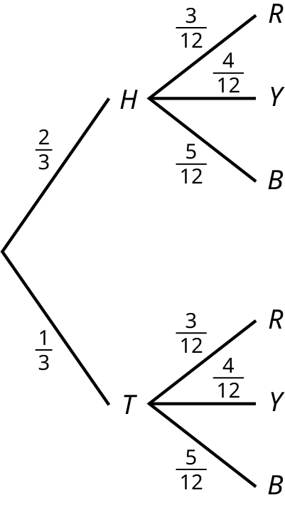
107. Find P(tossing a Head on the coin AND a Red bead)
- \(\frac{2}{3}\)
- \(\frac{5}{15}\)
- \(\frac{6}{36}\)
- \(\frac{5}{36}\)
108. Find P(Blue bead).
- \(\frac{15}{36}\)
- \(\frac{10}{36}\)
- \(\frac{10}{12}\)
- \(\frac{6}{36}\)
Answer
a
109. A box of cookies contains three chocolate and seven butter cookies. Miguel randomly selects a cookie and eats it. Then he randomly selects another cookie and eats it. (How many cookies did he take?)
- Draw the tree that represents the possibilities for the cookie selections. Write the probabilities along each branch of the tree.
- Are the probabilities for the flavor of the SECOND cookie that Miguel selects independent of his first selection? Explain.
- For each complete path through the tree, write the event it represents and find the probabilities.
- Let S be the event that both cookies selected were the same flavor. Find P(S).
- Let T be the event that the cookies selected were different flavors. Find P(T) by two different methods: by using the complement rule and by using the branches of the tree. Your answers should be the same with both methods.
- Let U be the event that the second cookie selected is a butter cookie. Find P(U).
Bringing It Together¶
3.2 Independent and Mutually Exclusive Events¶
110. A previous year, the weights of the members of the San Francisco 49ers and the Dallas Cowboys were published in the San Jose Mercury News. The factual data are compiled into Table 3.26.
Table 3.26
| Shirt# | ≤ 210 | 211–250 | 251–290 | 290≤ |
|---|---|---|---|---|
| 1–33 | 21 | 5 | 0 | 0 |
| 34–66 | 6 | 18 | 7 | 4 |
| 66–99 | 6 | 12 | 22 | 5 |
For the following, suppose that you randomly select one player from the 49ers or Cowboys.
If having a shirt number from one to 33 and weighing at most 210 pounds were independent events, then what should be true about P(Shirt# 1–33|≤ 210 pounds)?
111. The probability that a person develops cancer is 0.4567. The probability that a person has at least one false positive test result (meaning the test comes back for cancer when the person does not have it) is 0.51. Some of the following questions do not have enough information for you to answer them. Write “not enough information” for those answers. Let C = a person develops cancer and P = a person has at least one false positive.
- P(C) = ______
- P(P|C) = ______
- P(P|C') = ______
- If a test comes up positive, based upon numerical values, can you assume that a male has cancer? Justify numerically and explain why or why not.
Answer
- P(C) = 0.4567
- not enough information
- not enough information
- No, because over half (0.51) of men have at least one false positive text
112. Given events G and H: P(G) = 0.43; P(H) = 0.26; P(H AND G) = 0.14
- Find P(H OR G).
- Find the probability of the complement of event (H AND G).
- Find the probability of the complement of event (H OR G).
113. Given events J and K: P(J) = 0.18; P(K) = 0.37; P(J OR K) = 0.45
- Find P(J AND K).
- Find the probability of the complement of event (J AND K).
- Find the probability of the complement of event (J OR K).
Answer
- P(J OR K) = P(J) + P(K) − P(J AND K); 0.45 = 0.18 + 0.37 - P(J AND K); solve to find P(J AND K) = 0.10
- P(NOT (J AND K)) = 1 - P(J AND K) = 1 - 0.10 = 0.90
- P(NOT (J OR K)) = 1 - P(J OR K) = 1 - 0.45 = 0.55
3.5 Tree and Venn Diagrams¶
Use the following information to answer the next two exercises. Suppose that you have eight cards. Five are green and three are yellow. The cards are well shuffled.
114. Suppose that you randomly draw two cards, one at a time, with replacement.
Let G1 = first card is green
Let G2 = second card is green
- Draw a tree diagram of the situation.
- Find P(G1 AND G2).
- Find P(at least one green).
- Find P(G2|G1).
- Are G2 and G1 independent events? Explain why or why not.
Answer
a.
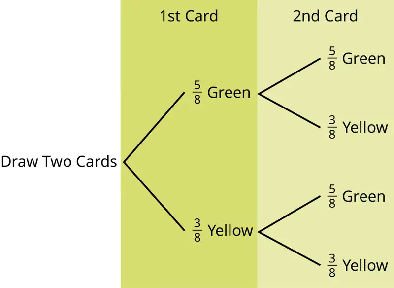
b. P(GG) = \(\left( \frac{5}{8} \right)\left( \frac{5}{8} \right)\) = \(\frac{25}{64}\)
c. P(at least one green) = P(GG) + P(GY) + P(YG) = \(\frac{25}{64}\) + \(\frac{15}{64}\) + \(\frac{15}{64}\) = \(\frac{55}{64}\)
d. P(G|G) = \(\frac{5}{8}\)
e. Yes, they are independent because the first card is placed back in the bag before the second card is drawn; the composition of cards in the bag remains the same from draw one to draw two.
115. Suppose that you randomly draw two cards, one at a time, without replacement.
G1 = first card is green
G2 = second card is green
- Draw a tree diagram of the situation.
- Find P(G1 AND G2).
- Find P(at least one green).
- Find P(G2|G1).
- Are G2 and G1 independent events? Explain why or why not.
Use the following information to answer the next two exercises. The percent of licensed U.S. drivers (from a recent year) that are women is 48.60. Of the women, 5.03% are age 19 and under; 81.36% are age 20–64; 13.61% are age 65 or over. Of the licensed U.S. men drivers, 5.04% are age 19 and under; 81.43% are age 20–64; 13.53% are age 65 or over.
116. Complete the following.
- Construct a table or a tree diagram of the situation.
- Find P(driver is a woman).
- Find P(driver is age 65 or over|driver is a woman).
- Find P(driver is age 65 or over AND a woman).
- In words, explain the difference between the probabilities in part c and part d.
- Find P(driver is age 65 or over).
- Are being age 65 or over and being a woman mutually exclusive events? How do you know?
Answer
a. Table 3.27
| <20 | 20–64 | >64 | Totals | |
|---|---|---|---|---|
| Women | 0.0244 | 0.3954 | 0.0661 | 0.486 |
| Men | 0.0259 | 0.4186 | 0.0695 | 0.514 |
| Totals | 0.0503 | 0.8140 | 0.1356 | 1 |
b. P(F) = 0.486
c. P(>64|F) = 0.1361
d. P(>64 and F) = P(F) P(>64|F) = (0.486)(0.1361) = 0.0661
e. P(>64|F) is the percentage of women drivers who are 65 or older and P(>64 and F) is the percentage of drivers who are women and 65 or older.
f. P(>64) = P(>64 and F) + P(>64 and M) = 0.1356
g. No, being a woman and 65 or older are not mutually exclusive because they can occur at the same time P(>64 and F) = 0.0661.
117. Suppose that 10,000 U.S. licensed drivers are randomly selected.
- How many would you expect to be men?
- Using the table or tree diagram, construct a contingency table of gender versus age group.
- Using the contingency table, find the probability that out of the age 20–64 group, a randomly selected driver is a woman.
118. Approximately 86.5% of Americans commute to work by car, truck, or van. Out of that group, 84.6% drive alone and 15.4% drive in a carpool. Approximately 3.9% walk to work and approximately 5.3% take public transportation.
- Construct a table or a tree diagram of the situation. Include a branch for all other modes of transportation to work.
- Assuming that the walkers walk alone, what percent of all commuters travel alone to work?
- Suppose that 1,000 workers are randomly selected. How many would you expect to travel alone to work?
- Suppose that 1,000 workers are randomly selected. How many would you expect to drive in a carpool?
Answer
a. Table 3.28
| Car, Truck or Van | Walk | Public Transportation | Other | Totals | |
|---|---|---|---|---|---|
| Alone | 0.7318 | ||||
| Not Alone | 0.1332 | ||||
| Totals | 0.8650 | 0.0390 | 0.0530 | 0.0430 | 1 |
b. If we assume that all walkers are alone and that none from the other two groups travel alone (which is a big assumption) we have: P(Alone) = 0.7318 + 0.0390 = 0.7708.
c. Make the same assumptions as in (b) we have: (0.7708)(1,000) = 771
d. (0.1332)(1,000) = 133
119. When the Euro coin was introduced in 2002, two math professors had their statistics students test whether the Belgian one Euro coin was a fair coin. They spun the coin rather than tossing it and found that out of 250 spins, 140 showed a head (event H) while 110 showed a tail (event T). On that basis, they claimed that it is not a fair coin.
- Based on the given data, find P(H) and P(T).
- Use a tree to find the probabilities of each possible outcome for the experiment of tossing the coin twice.
- Use the tree to find the probability of obtaining exactly one head in two tosses of the coin.
- Use the tree to find the probability of obtaining at least one head.
120. Use the following information to answer the next two exercises. The following data represent the number of new vehicles purchased over a monthly time period in a certain county, within two age groups: people in their twenties and people in their thirties.
Table 3.29
| Sedan | SUV | Minivan | Other | Totals | |
|---|---|---|---|---|---|
| Twenties | 1,135 | 290 | 583 | 158 | |
| Thirties | 1,246 | 463 | 241 | 190 | |
| Totals |
Suppose a person from this county is randomly selected.
- Find P(Person is in their twenties).
- Find P(Person purchases minivan).
- Find P(Person is in their twenties OR purchases an SUV).
- Find P(Person is in their twenties AND purchases a SEDAN).
- Find P(Person is in their thirties AND purchases an SUV).
- Find P(Person is in their twenties GIVEN person purchases a minivan).
Answer
The completed contingency table is as follows:
Table 3.30 New Vehicles Purchased by Gender
| Sedan | SUV | Minivan | Other | Totals | |
|---|---|---|---|---|---|
| Twenties | 1,135 | 290 | 583 | 158 | 2166 |
| Thirties | 1246 | 463 | 241 | 190 | 2140 |
| Totals | 2381 | 753 | 824 | 348 | 4306 |
Suppose a person from this county is randomly selected.
- P(Person is in their twenties) = 0.5030
- P(Person purchases minivan) = 0.1914
- P(Person is in their twenties OR has purchases an SUV) = 0.6105
- P(Person is in their twenties AND purchases a SEDAN) = 0.0673
- P(Person is in their thirties AND has purchases an SUV) = 0.1075
- P(Person is in their twenties GIVEN person purchases a minivan) = 0.7075
121. Answer these questions using probability rules. Do NOT use the contingency table. A total of 6,481 new vehicles were purchased over a monthly time period in a certain county. These purchases will be our population. Of these purchases, 36% were made by people in their twenties, and 42% were purchases of sedans. 20% of purchases were for sedans purchased by people in their twenties.
- Find P(Person is in their twenties).
- Find P(Person purchased a sedan).
- Find P(Person is in their twenties GIVEN person purchased a sedan)
Answer
- P(Person is in their twenties) = 0.36.
- P(Person purchased a sedan) = 0.42
- P(Person is in their twenties a woman GIVEN person purchased a sedan) = 0.4762
Bringing It Together¶
Use the following information to answer the next seven exercises. An article in the New England Journal of Medicine, reported about a study of smokers in California and Hawaii. In one part of the report, the self-reported ethnicity and smoking levels per day were given. Of the people smoking at most ten cigarettes per day, there were 9,886 Black people, 2,745 Native Hawaiian people, 12,831 Hispanic/Latino people, 8,378 Japanese people, and 7,650 White people. Of the people smoking 11 to 20 cigarettes per day, there were 6,514 Black people, 3,062 Native Hawaiian people, 4,932 Hispanic/Latino people, 10,680 Japanese people, and 9,877 White people. Of the people smoking 21 to 30 cigarettes per day, there were 1,671 Black people, 1,419 Native Hawaiian people, 1,406 Hispanic/Latino people, 4,715 Japanese people, and 6,062 White people. Of the people smoking at least 31 cigarettes per day, there were 759 Black people, 788 Native Hawaiian people, 800 Hispanic/Latino people, 2,305 Japanese people, and 3,970 White people.
122. Complete the table using the data provided.
Table 3.31 Smoking Levels by Ethnicity
| Smoking Level | Black | Native Hawaiian | Hispanic/Latino | Japanese people | White | TOTALS |
|---|---|---|---|---|---|---|
| 1–10 | ||||||
| 11–20 | ||||||
| 21–30 | ||||||
| 31+ | ||||||
| TOTALS |
123. Suppose that one person from the study is randomly selected. Find the probability that person smoked 11 to 20 cigarettes per day.
Answer
\(\frac{35,065}{100,450}\)
124. Find the probability that the person was Hispanic/Latino.
125. In words, explain what it means to pick one person from the study who is “Japanese American AND smokes 21 to 30 cigarettes per day.” Also, find the probability.
Answer
To pick one person from the study who is Japanese American AND smokes 21 to 30 cigarettes per day means that the person has to meet both criteria: both Japanese American and smokes 21 to 30 cigarettes. The sample space should include everyone in the study. The probability is \(\frac{4,715}{100,450}\).
126. In words, explain what it means to pick one person from the study who is “Japanese American OR smokes 21 to 30 cigarettes per day.” Also, find the probability.
127. In words, explain what it means to pick one person from the study who is “Japanese American GIVEN that person smokes 21 to 30 cigarettes per day.” Also, find the probability.
Answer
To pick one person from the study who is Japanese American given that person smokes 21-30 cigarettes per day, means that the person must fulfill both criteria and the sample space is reduced to those who smoke 21-30 cigarettes per day. The probability is \(\frac{4715}{15,273}\).
128. Prove that smoking level/day and ethnicity are dependent events.
Adapted from Introductory Statistics 2e by OpenStax, licensed under CC BY 4.0. Access the original for free at openstax.org. Changes: converted to the web reading format of The Open Book Project.